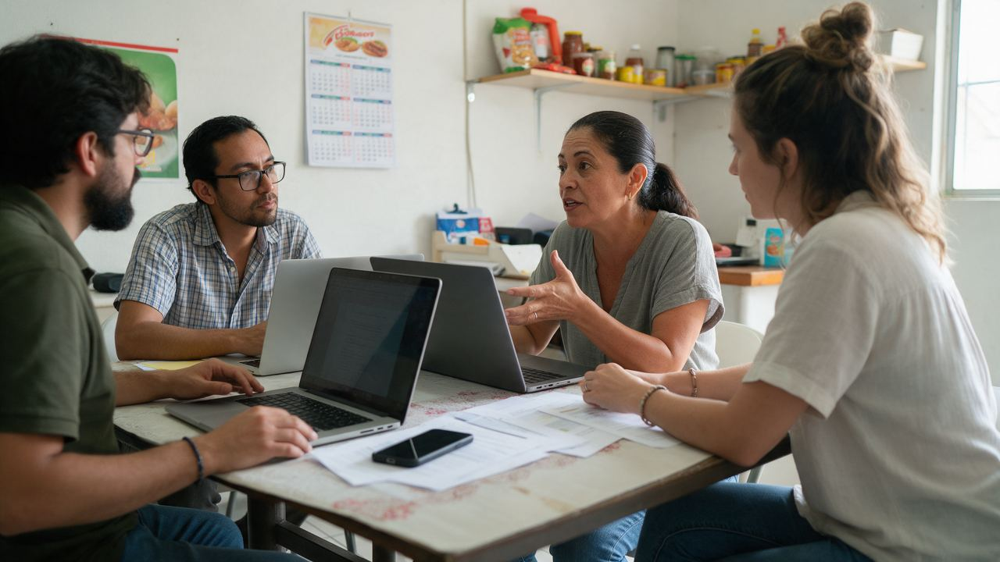
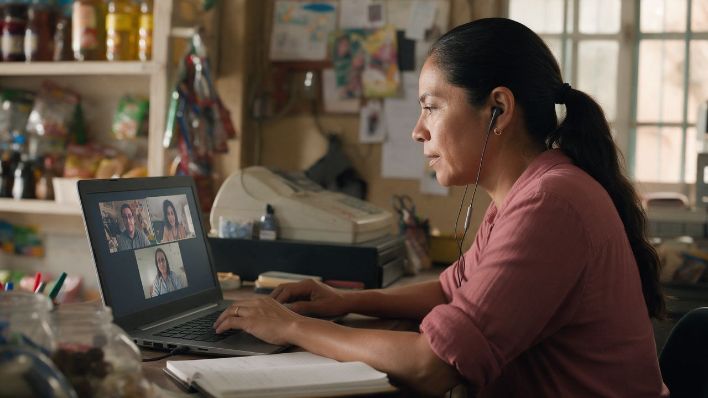
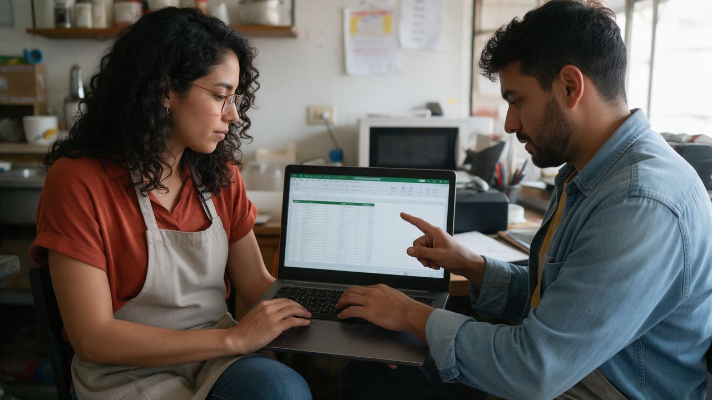

<title>Tu ecosistema de trabajo digital</title>
<style>
/* Layout: panel lateral fijo con la ruta + pantalla tipo Rise + barra inferior de navegación (homologado con Lección 2.4) */
:root{
  --bg:#dbe3e6; --bg2:#eef2f4; --surface:#ffffff; --surface2:#f7fafb; --surface3:#fbfcfd;
  --ink:#172431; --ink2:#28404e; --muted:#5f7180;
  --teal:#0f7a82; --teal2:#2bc2b1; --teal-ink:#0b666d; --navy:#173f4e; --line:#c9d6dc; --line2:#d8e2e6; --mint:#eaf7f6; --mint-line:#a9dbd7;
  --violet:#6c3dd1; --violet-soft:#f2ecff; --amber:#c97d0e; --amber-soft:#fff2dc; --amber-ink:#9a5e04;
  --story-bg:#fff8ed; --story-line:#eed4aa; --callout-bg:#f4fbfb; --callout-line:#c3e5e2;
  --good:#166534; --good-soft:#edf9ef; --good-line:#8dcf9d; --bad:#9e1c40; --bad-soft:#fff0f4; --bad-line:#e6a1b2;
  --track:#cdd8dd; --chip:#e8eff2; --on-accent:#ffffff;
  --shadow:0 18px 40px rgba(22,52,68,.10);
  /* "Video": escenario siempre oscuro, igual en ambos temas */
  --stage:#10303c; --stage2:#173f4e; --stage-ink:#eaf7f6; --stage-muted:#9fc3c8; --stage-bad:#ff8fa8; --stage-amber:#ffc56b;
  --font:system-ui,-apple-system,"Segoe UI",Roboto,Arial,sans-serif;
}
@media (prefers-color-scheme: dark){:root:not([data-theme="light"]){
  --bg:#0c161b; --bg2:#101d23; --surface:#15242c; --surface2:#1a2c35; --surface3:#182a32;
  --ink:#e4eef1; --ink2:#c7d7dd; --muted:#93a8b2;
  --teal:#3cc2c0; --teal2:#2bc2b1; --teal-ink:#7fe0d8; --navy:#9fd6dc; --line:#2a414c; --line2:#2f4752; --mint:#163a3c; --mint-line:#2b6b69;
  --violet:#b69bff; --violet-soft:#2a2147; --amber:#f0a83a; --amber-soft:#3a2a10; --amber-ink:#f5c070;
  --story-bg:#2a2214; --story-line:#5c4620; --callout-bg:#13302f; --callout-line:#245654;
  --good:#8fe0a6; --good-soft:#14301f; --good-line:#2f7a46; --bad:#ff9db4; --bad-soft:#3a1622; --bad-line:#8a3550;
  --track:#2a3c45; --chip:#22343d; --on-accent:#06181c;
  --shadow:0 18px 40px rgba(0,0,0,.35); color-scheme:dark;
}}
:root[data-theme="dark"]{
  --bg:#0c161b; --bg2:#101d23; --surface:#15242c; --surface2:#1a2c35; --surface3:#182a32;
  --ink:#e4eef1; --ink2:#c7d7dd; --muted:#93a8b2;
  --teal:#3cc2c0; --teal2:#2bc2b1; --teal-ink:#7fe0d8; --navy:#9fd6dc; --line:#2a414c; --line2:#2f4752; --mint:#163a3c; --mint-line:#2b6b69;
  --violet:#b69bff; --violet-soft:#2a2147; --amber:#f0a83a; --amber-soft:#3a2a10; --amber-ink:#f5c070;
  --story-bg:#2a2214; --story-line:#5c4620; --callout-bg:#13302f; --callout-line:#245654;
  --good:#8fe0a6; --good-soft:#14301f; --good-line:#2f7a46; --bad:#ff9db4; --bad-soft:#3a1622; --bad-line:#8a3550;
  --track:#2a3c45; --chip:#22343d; --on-accent:#06181c;
  --shadow:0 18px 40px rgba(0,0,0,.35); color-scheme:dark;
}
*{box-sizing:border-box}
[hidden]{display:none!important}
body{margin:0;font-family:var(--font);background:linear-gradient(180deg,var(--bg2),var(--bg)) fixed;background-color:var(--bg);color:var(--ink);line-height:1.5;overflow-x:hidden}
img{max-width:100%;display:block}
button{font:inherit;color:inherit}
button:focus-visible,textarea:focus-visible,input:focus-visible{outline:3px solid var(--teal2);outline-offset:2px}
h1,h2,h3,h4{line-height:1.15;margin:.5rem 0 .8rem;text-wrap:balance}
h1{font-size:clamp(1.9rem,4vw,2.9rem)}
h2{font-size:clamp(1.4rem,2.8vw,2.1rem)}
h3{font-size:1.12rem}
p{margin:.35rem 0 1rem;max-width:72ch}
small{color:var(--muted)}

.app{max-width:1240px;margin:auto;padding:12px 16px 120px}
@media(min-width:980px){.app{max-width:calc(100% - 275px);margin-left:257px;margin-right:18px;padding-inline:18px}}

.topbar{position:sticky;top:env(safe-area-inset-top,0px);z-index:20;background:color-mix(in srgb,var(--bg2) 94%,transparent);backdrop-filter:blur(10px);padding:8px 0 10px;margin-bottom:10px}
.topbar-row{display:flex;justify-content:space-between;flex-wrap:wrap;gap:6px 12px;font-size:.82rem;font-weight:850;color:var(--muted)}
.topbar-row .course{color:var(--teal);letter-spacing:.04em}
.progress{height:8px;background:var(--track);border-radius:999px;overflow:hidden;margin-top:8px}
.progress span{display:block;height:100%;width:10%;background:linear-gradient(90deg,var(--teal),var(--teal2));transition:width .3s ease}

.topic-panel{position:fixed;left:18px;top:92px;width:240px;z-index:35;background:var(--surface);border:1px solid var(--line);border-radius:20px;box-shadow:var(--shadow);padding:14px;max-height:calc(100vh - 200px);overflow-y:auto}
.topic-panel h3{margin:0 0 4px;font-size:.92rem;color:var(--navy)}
.topic-panel .mode{font-size:.74rem;color:var(--muted);margin:0 0 10px;font-weight:700}
.topic-list{display:grid;gap:7px}
.topic-link{width:100%;display:grid;grid-template-columns:30px 1fr 14px;gap:8px;align-items:center;padding:8px 9px;border-radius:12px;color:var(--muted);background:var(--surface2);font-size:.78rem;font-weight:800;border:1px solid transparent;text-align:left;cursor:pointer}
.topic-link .dotnum{width:28px;height:28px;border-radius:9px;display:grid;place-items:center;background:var(--chip);font-weight:900}
.topic-link .lock{font-size:.7rem;opacity:.7}
.topic-link:hover:not(:disabled){border-color:var(--mint-line);background:var(--mint)}
.topic-link.active{background:var(--mint);color:var(--teal-ink);border-color:var(--mint-line)}
.topic-link.active .dotnum{background:var(--teal);color:var(--on-accent)}
.topic-link.done:not(.active){color:var(--good)}
.topic-link.done:not(.active) .dotnum{background:var(--good-soft);color:var(--good)}
.topic-link:disabled{opacity:.5;cursor:not-allowed}
@media(max-width:979px){.topic-panel{display:none}}
.route-btn{display:none}
@media(max-width:979px){
  .route-btn{display:flex;align-items:center;gap:8px;width:100%;margin:0 0 10px;border:1px solid var(--mint-line);background:var(--mint);color:var(--teal-ink);border-radius:14px;padding:10px 14px;font-weight:850;font-size:.88rem;cursor:pointer;text-align:left}
  .topic-panel.open{display:block;position:fixed;left:16px;right:16px;top:auto;bottom:calc(80px + env(safe-area-inset-bottom,0px));width:auto;max-height:65vh;z-index:40}
}

.slide{display:none;background:var(--surface);border:1px solid var(--line);box-shadow:var(--shadow);border-radius:28px;padding:26px;overflow:hidden}
.slide.active{display:block}
.slide.active .reveal{animation:rise .5s ease both}
.slide.active .reveal:nth-child(2){animation-delay:.06s}.slide.active .reveal:nth-child(3){animation-delay:.12s}.slide.active .reveal:nth-child(4){animation-delay:.18s}.slide.active .reveal:nth-child(5){animation-delay:.24s}.slide.active .reveal:nth-child(6){animation-delay:.3s}
@keyframes rise{from{opacity:.25;transform:translateY(12px)}to{opacity:1;transform:none}}

.eyebrow{display:inline-block;padding:6px 12px;border-radius:999px;background:var(--mint);color:var(--teal-ink);font-size:.78rem;font-weight:900;letter-spacing:.05em;text-transform:uppercase}
.eyebrow.violet{background:var(--violet-soft);color:var(--violet)}
.eyebrow.amber{background:var(--amber-soft);color:var(--amber-ink)}
.grid-2{display:grid;grid-template-columns:1.1fr .9fr;gap:22px;align-items:start}
.grid-2>*{min-width:0}
.photo-frame{background:var(--surface2);border:1px solid var(--line);border-radius:22px;overflow:hidden}
.photo-frame img{width:100%;height:100%;object-fit:cover}
.story,.callout,.rule{border-radius:18px;padding:14px 18px;margin-top:14px}
.story{background:var(--story-bg);border:1px solid var(--story-line);border-left:6px solid var(--amber)}
.callout{background:var(--callout-bg);border:1px solid var(--callout-line);border-left:6px solid var(--teal)}
.sources{font-size:.8rem;color:var(--muted);margin-top:16px}
.hint{font-size:.85rem;color:var(--muted);font-weight:700}
.task{display:flex;gap:10px;align-items:center;margin:16px 0 8px;padding:10px 14px;border-radius:14px;background:var(--violet-soft);color:var(--violet);font-weight:850;font-size:.9rem}
.task .tick{margin-left:auto;font-size:.8rem;padding:3px 9px;border-radius:999px;background:var(--surface);color:var(--muted)}
.task.ok{background:var(--good-soft);color:var(--good)}
.task.ok .tick{color:var(--good)}

.small-btn{border:none;border-radius:14px;padding:11px 16px;font-weight:900;cursor:pointer;background:var(--chip);color:var(--ink)}
.small-btn.primary{background:linear-gradient(135deg,var(--navy),var(--teal));color:var(--surface)}
.small-btn:disabled{opacity:.45;cursor:not-allowed}

/* Persona */
.persona{display:flex;gap:10px;align-items:center;font-size:.85rem;color:var(--muted);font-weight:700}
.avatar{width:38px;height:38px;border-radius:50%;display:grid;place-items:center;font-weight:900;color:var(--surface);background:linear-gradient(135deg,var(--teal),var(--navy));flex:none}
.avatar.mgr{background:linear-gradient(135deg,var(--amber),var(--amber-ink))}

/* Bandeja (Hook) */
.inbox{display:grid;gap:10px;margin-top:14px}
.msg{display:grid;grid-template-columns:38px 1fr auto;gap:12px;align-items:start;text-align:left;width:100%;border:1px solid var(--line);border-radius:16px;background:var(--surface2);padding:12px 14px;cursor:pointer;transition:border-color .2s,background .2s}
.msg .from{font-weight:850;font-size:.86rem}
.msg .preview{color:var(--muted);font-size:.86rem}
.msg .full{display:none;margin-top:6px;font-size:1rem;font-weight:700;color:var(--ink)}
.msg .badge{font-size:.7rem;font-weight:900;padding:3px 8px;border-radius:999px;background:var(--amber-soft);color:var(--amber-ink)}
.msg.read{background:var(--surface);border-color:var(--mint-line)}
.msg.read .full{display:block}
.msg.read .preview{display:none}
.msg.read .badge{background:var(--mint);color:var(--teal-ink)}
.clock{font-variant-numeric:tabular-nums;font-weight:900;color:var(--amber-ink);background:var(--amber-soft);padding:4px 10px;border-radius:10px;display:inline-block}

/* Opciones / decisiones */
.options{display:grid;gap:10px;margin:14px 0}
.opt{display:grid;grid-template-columns:34px 1fr;gap:12px;align-items:start;border:2px solid var(--line2);border-radius:16px;background:var(--surface);padding:12px 14px;text-align:left;font-weight:700;cursor:pointer;transition:border-color .15s,background .15s,transform .15s}
.opt .letter{width:32px;height:32px;border-radius:10px;display:grid;place-items:center;background:var(--chip);font-weight:900}
.opt:hover:not(:disabled){border-color:var(--teal);transform:translateX(3px)}
.opt:disabled{cursor:default}
.opt.good{border-color:var(--good-line);background:var(--good-soft);color:var(--good)}
.opt.bad{border-color:var(--bad-line);background:var(--bad-soft);color:var(--bad)}
.opt.dim{opacity:.55}
.feedback{margin-top:12px;padding:14px 16px;border-radius:16px}
.feedback.good{background:var(--good-soft);border:1px solid var(--good-line);color:var(--good)}
.feedback.bad{background:var(--bad-soft);border:1px solid var(--bad-line);color:var(--bad)}
.feedback .fb-body{color:var(--ink)}
.branch{margin-top:14px;border-radius:20px;border:1px solid var(--line);background:var(--surface3);overflow:hidden;animation:rise .4s ease both}
.branch-head{display:flex;gap:10px;align-items:center;padding:12px 16px;font-weight:900}
.branch.good .branch-head{background:var(--good-soft);color:var(--good)}
.branch.bad .branch-head{background:var(--bad-soft);color:var(--bad)}
.branch-body{padding:14px 16px;display:grid;grid-template-columns:1fr 1fr;gap:18px;align-items:center}
.branch-body>*{min-width:0}
.branch-actions{padding:0 16px 16px;display:flex;gap:10px;flex-wrap:wrap}
.chat{display:grid;gap:10px;margin:12px 0}
.bubble{position:relative;max-width:560px;padding:12px 16px;border-radius:18px;background:var(--amber-soft);color:var(--ink);font-weight:650}
.bubble.camila{background:var(--mint);justify-self:end}
.bubble .who{display:block;font-size:.72rem;font-weight:900;letter-spacing:.05em;text-transform:uppercase;color:var(--muted);margin-bottom:2px}

/* Gráfico semanal */
.week{position:relative;display:flex;gap:8px;align-items:flex-end;height:170px;padding:22px 6px 0;border-bottom:2px solid var(--line)}
.week .col{flex:1;display:flex;flex-direction:column;align-items:center;justify-content:flex-end;height:100%;min-width:0;position:relative}
.week .bar{width:100%;max-width:58px;border-radius:10px 10px 4px 4px;background:linear-gradient(180deg,var(--teal2),var(--teal));position:relative;display:flex;flex-direction:column;transition:height .5s ease}
.week .bar.over{background:linear-gradient(180deg,var(--bad-line),var(--bad))}
.week .bar .cut{width:100%;border-radius:10px 10px 0 0;background:repeating-linear-gradient(135deg,var(--amber) 0 6px,var(--amber-soft) 6px 12px);opacity:0;transition:opacity .4s}
.week .bar .cut.on{opacity:1}
.week .val{position:absolute;top:-20px;font-size:.72rem;font-weight:900;color:var(--ink);white-space:nowrap;font-variant-numeric:tabular-nums}
.week .limit{position:absolute;left:0;right:0;border-top:2px dashed var(--bad);pointer-events:none}
.week .limit span{position:absolute;right:0;top:3px;font-size:.7rem;font-weight:900;color:var(--bad);background:var(--surface3);padding:0 4px}
.week-labels{display:flex;gap:8px;padding:6px 6px 0}
.week-labels span{flex:1;text-align:center;font-size:.76rem;font-weight:800;color:var(--muted)}
.week-total{display:flex;justify-content:space-between;align-items:center;gap:10px;margin-top:10px;font-weight:850;flex-wrap:wrap}
.pill{display:inline-flex;align-items:center;gap:6px;padding:4px 10px;border-radius:999px;font-size:.78rem;font-weight:900;font-variant-numeric:tabular-nums}
.pill.good{background:var(--good-soft);color:var(--good)}
.pill.bad{background:var(--bad-soft);color:var(--bad)}
.pill.warn{background:var(--amber-soft);color:var(--amber-ink)}
.pill.info{background:var(--mint);color:var(--teal-ink)}

/* Video */
.player{border-radius:24px;overflow:hidden;background:var(--stage);color:var(--stage-ink);box-shadow:var(--shadow)}
.stage{position:relative;aspect-ratio:16/9;max-width:100%;display:grid;place-items:center;padding:28px;background:radial-gradient(circle at 20% 15%,var(--stage2),var(--stage) 70%);overflow:hidden}
.stage .scene{width:100%;max-width:720px;animation:sceneIn .6s ease both}
@keyframes sceneIn{from{opacity:0;transform:scale(.97)}to{opacity:1;transform:none}}
.stage .tag{position:absolute;top:14px;left:16px;font-size:.72rem;font-weight:900;letter-spacing:.08em;text-transform:uppercase;color:var(--stage-muted)}
.stage .bigplay{position:absolute;inset:0;display:grid;place-items:center;background:rgba(6,20,26,.55);border:none;cursor:pointer;color:var(--stage-ink);font-weight:900;font-size:1rem}
.stage .bigplay .circle{width:84px;height:84px;border-radius:50%;display:grid;place-items:center;background:var(--teal2);color:var(--stage);font-size:2rem;margin:0 auto 10px;box-shadow:0 0 0 10px rgba(43,194,177,.25)}
.caption{min-height:4.4em;padding:12px 18px;font-size:1rem;line-height:1.45;background:rgba(0,0,0,.25);color:var(--stage-ink)}
.caption.off{display:none}
.controls{display:flex;gap:8px;align-items:center;padding:10px 12px;flex-wrap:wrap;background:rgba(0,0,0,.3)}
.ctrl{border:none;background:rgba(255,255,255,.1);color:var(--stage-ink);border-radius:10px;padding:8px 12px;font-weight:850;cursor:pointer;font-size:.85rem}
.ctrl.on{background:var(--teal2);color:var(--stage)}
.vtrack{flex:1 1 160px;height:6px;border-radius:999px;background:rgba(255,255,255,.18);overflow:hidden;min-width:120px}
.vtrack span{display:block;height:100%;width:0;background:var(--teal2)}
.vtime{font-variant-numeric:tabular-nums;font-size:.8rem;color:var(--stage-muted);font-weight:800}
.chapters{display:flex;gap:6px;flex-wrap:wrap;padding:0 12px 12px;background:rgba(0,0,0,.3)}
.chap{border:1px solid rgba(255,255,255,.18);background:transparent;color:var(--stage-muted);border-radius:999px;padding:5px 10px;font-size:.75rem;font-weight:800;cursor:pointer}
.chap.on{background:rgba(43,194,177,.18);border-color:var(--teal2);color:var(--stage-ink)}
.chap.seen::after{content:" ✓";color:var(--teal2)}
.v-eq{display:flex;justify-content:center;gap:14px;align-items:baseline;font-size:clamp(2rem,7vw,4.4rem);font-weight:900;font-variant-numeric:tabular-nums;flex-wrap:wrap}
.v-eq .op{color:var(--stage-muted)}
.v-eq .q{color:var(--stage-amber)}
.v-sub{text-align:center;color:var(--stage-muted);font-weight:800;margin-top:8px}
.v-strike{position:relative;display:inline-block}
.v-strike[data-at].on::after{content:"";position:absolute;left:-6%;right:-6%;top:52%;height:6px;background:var(--stage-bad);border-radius:6px;transform:rotate(-6deg)}
.v-tl{display:grid;grid-template-columns:repeat(4,1fr);gap:10px;text-align:center}
.v-tl .n{width:clamp(54px,10vw,84px);aspect-ratio:1;border-radius:50%;display:grid;place-items:center;margin:0 auto 8px;border:4px solid rgba(255,255,255,.25);font-size:clamp(1.1rem,3vw,1.7rem);font-weight:900}
.v-tl .now .n{background:var(--teal2);border-color:var(--teal2);color:var(--stage);box-shadow:0 0 0 8px rgba(43,194,177,.2)}
.v-tl small{color:var(--stage-muted);display:block;font-weight:700}
.v-tl .now small{color:var(--stage-ink)}
.v-chk{display:flex;gap:8px;justify-content:center;flex-wrap:wrap;margin-top:18px}
.v-chk span{padding:6px 12px;border-radius:999px;border:1px solid rgba(255,255,255,.25);font-weight:800;font-size:.82rem;opacity:.25;transition:opacity .4s,background .4s}
.v-chk span.on{opacity:1;background:rgba(43,194,177,.18)}
.stage .week{border-color:rgba(255,255,255,.25);height:clamp(110px,22vw,190px)}
.stage .week .val{color:var(--stage-ink)}
.stage .week-labels span{color:var(--stage-muted)}
.stage .week .limit{border-color:var(--stage-bad)}
.stage .week .limit span{background:var(--stage);color:var(--stage-bad)}
.stage .note{text-align:center;font-weight:800;margin-top:12px;color:var(--stage-amber);opacity:0;transition:opacity .4s}
.stage .note.on{opacity:1}
.v-steps{display:grid;gap:8px;max-width:520px;margin:0 auto;counter-reset:s}
.v-steps div{display:flex;gap:12px;align-items:center;padding:8px 12px;border-radius:12px;background:rgba(255,255,255,.06);opacity:.25;transition:all .4s;font-weight:800}
.v-steps div::before{counter-increment:s;content:counter(s);width:28px;height:28px;flex:none;border-radius:8px;display:grid;place-items:center;background:rgba(255,255,255,.12)}
.v-steps div.on{opacity:1;background:rgba(43,194,177,.16)}
.v-steps div.on::before{background:var(--teal2);color:var(--stage)}
.v-final{text-align:center;font-size:clamp(1.3rem,3.6vw,2.2rem);font-weight:900;line-height:1.25}
.v-final em{font-style:normal;color:var(--teal2)}
details.transcript{margin-top:14px;border:1px solid var(--line);border-radius:16px;padding:12px 16px;background:var(--surface2)}
details.transcript summary{cursor:pointer;font-weight:850}
@media(max-width:560px){.stage{aspect-ratio:auto;min-height:300px;padding:40px 14px 20px}}

/* Mapa de decisión */
.flow{display:grid;gap:0;margin-top:16px}
.node{display:grid;grid-template-columns:48px 1fr;gap:14px;position:relative}
.node:not(:last-child)::after{content:"";position:absolute;left:23px;top:48px;bottom:0;width:2px;background:var(--line)}
.node.open:not(:last-child)::after{background:var(--teal)}
.node .num{width:48px;height:48px;border-radius:14px;display:grid;place-items:center;font-weight:900;background:var(--chip);color:var(--muted);border:none;cursor:pointer;z-index:1}
.node.open .num{background:var(--teal);color:var(--surface)}
.node .card{border:1px solid var(--line);border-radius:16px;margin-bottom:12px;background:var(--surface);overflow:hidden;min-width:0}
.node .q{width:100%;border:none;background:transparent;padding:13px 16px;text-align:left;font-weight:850;cursor:pointer;display:flex;justify-content:space-between;gap:10px}
.node .a{display:none;padding:0 16px 14px;color:var(--ink2)}
.node.open .a{display:block;animation:rise .35s ease both}
.node.open .card{border-color:var(--mint-line)}
.answer{font-size:1.05rem;font-weight:850;color:var(--teal-ink);margin-bottom:4px}

/* Laboratorio */
.lab{margin-top:22px;border:1px solid var(--line);border-radius:22px;background:var(--surface3);padding:18px}
.lab-grid{display:grid;grid-template-columns:1fr 1fr;gap:18px}
.lab-grid>*{min-width:0}
.seg{display:inline-flex;border:1px solid var(--line);border-radius:12px;overflow:hidden}
.seg button{border:none;background:var(--surface);padding:8px 14px;font-weight:850;cursor:pointer}
.seg button.on{background:var(--navy);color:var(--surface)}
.presets{display:flex;gap:8px;flex-wrap:wrap;margin:10px 0}
.preset{border:1px dashed var(--line);background:var(--surface);border-radius:999px;padding:6px 12px;font-size:.8rem;font-weight:800;cursor:pointer}
.sliders{display:grid;gap:8px;margin-top:10px}
.srow{display:grid;grid-template-columns:44px 1fr 64px;gap:10px;align-items:center;font-size:.85rem;font-weight:800}
.srow input{width:100%;accent-color:var(--teal)}
.srow output{font-variant-numeric:tabular-nums;text-align:right}
.toggle{display:flex;gap:10px;align-items:center;margin-top:12px;font-size:.88rem;font-weight:750}
.toggle input{width:18px;height:18px;accent-color:var(--teal)}
.checks{display:grid;gap:8px;margin-top:12px}
.checkrow{display:grid;grid-template-columns:26px 1fr;gap:8px;align-items:start;padding:9px 12px;border-radius:12px;font-size:.88rem}
.checkrow.ok{background:var(--good-soft);color:var(--good)}
.checkrow.ko{background:var(--bad-soft);color:var(--bad)}
.checkrow.wa{background:var(--amber-soft);color:var(--amber-ink)}
.checkrow b{display:block}
.checkrow span.d{color:var(--ink2);font-weight:500}

/* Actividades */
.daybtns{display:grid;grid-template-columns:repeat(auto-fit,minmax(58px,1fr));gap:8px;margin-top:8px}
.daybtn{flex:1 1 70px;border:2px solid var(--line2);background:var(--surface);border-radius:14px;padding:10px 6px;font-weight:850;cursor:pointer;text-align:center;font-size:.85rem}
.daybtn small{display:block;font-weight:700}
.daybtn.on{border-color:var(--amber);background:var(--amber-soft);color:var(--amber-ink)}
.chips{display:flex;gap:10px;flex-wrap:wrap;margin:10px 0}
.chipm{border:2px solid var(--amber);background:var(--amber-soft);color:var(--amber-ink);border-radius:12px;padding:8px 14px;font-weight:900;cursor:grab;font-variant-numeric:tabular-nums}
.chipm.sel{box-shadow:0 0 0 4px color-mix(in srgb,var(--amber) 35%,transparent)}
.chipm.placed{opacity:.45}
.docs{display:grid;grid-template-columns:repeat(2,1fr);gap:10px;margin-top:12px}
.doc{display:grid;grid-template-columns:28px 1fr;gap:10px;text-align:left;border:2px solid var(--line2);border-radius:14px;background:var(--surface);padding:12px;cursor:pointer;font-weight:750;font-size:.9rem}
.doc .box{width:24px;height:24px;border-radius:7px;border:2px solid var(--line);display:grid;place-items:center;font-size:.8rem}
.doc.on{border-color:var(--teal);background:var(--mint)}
.doc.on .box{background:var(--teal);border-color:var(--teal);color:var(--surface)}
.doc.good{border-color:var(--good-line);background:var(--good-soft)}
.doc.bad{border-color:var(--bad-line);background:var(--bad-soft)}
.doc.miss{border-style:dashed;border-color:var(--amber)}
.phase[hidden]{display:none}

/* Quiz */
.qhead{display:flex;justify-content:space-between;align-items:center;gap:10px;flex-wrap:wrap}
.qdots{display:flex;gap:6px}
.qdots span{width:28px;height:8px;border-radius:999px;background:var(--track)}
.qdots span.cur{background:var(--teal)}
.qdots span.g{background:var(--good-line)}
.qdots span.b{background:var(--bad-line)}
.qcard{border:1px solid var(--line);border-radius:20px;padding:18px;margin-top:12px;background:var(--surface3)}
.score{display:grid;grid-template-columns:auto 1fr;gap:18px;align-items:center}
.ring{width:110px;height:110px;border-radius:50%;display:grid;place-items:center;font-size:1.6rem;font-weight:900;font-variant-numeric:tabular-nums}

/* Matching */
.match{display:grid;grid-template-columns:1fr 1fr;gap:18px;margin-top:14px}
.match>*{min-width:0}
.areas,.sols{display:grid;gap:10px;align-content:start}
.area{border:2px solid var(--line2);border-radius:18px;background:var(--surface);padding:14px;cursor:pointer;text-align:left;width:100%}
.area .slot{margin-top:10px;min-height:44px;border:2px dashed var(--line);border-radius:12px;padding:8px 10px;font-size:.86rem;color:var(--muted);display:flex;align-items:center}
.area.target{border-color:var(--teal);background:var(--mint)}
.area.matched{border-color:var(--good-line);background:var(--good-soft);cursor:default}
.area.matched .slot{border-style:solid;border-color:var(--good-line);color:var(--good);font-weight:800}
.area.shake{animation:shake .4s}
@keyframes shake{25%{transform:translateX(-6px)}75%{transform:translateX(6px)}}
.sol{border:2px solid var(--violet);background:var(--violet-soft);color:var(--ink);border-radius:14px;padding:12px;text-align:left;font-weight:750;cursor:grab;width:100%}
.sol.sel{box-shadow:0 0 0 4px color-mix(in srgb,var(--violet) 30%,transparent)}
.sol.used{display:none}
.area-meta{display:flex;gap:6px;flex-wrap:wrap;margin-top:6px}

/* Cierre */
.clist{display:grid;gap:8px;margin-top:12px}
.citem{display:grid;grid-template-columns:28px 1fr;gap:10px;align-items:center;border:1px solid var(--line);border-radius:14px;padding:11px 14px;background:var(--surface);cursor:pointer;font-weight:750}
.citem input{width:20px;height:20px;accent-color:var(--teal)}
.citem.on{background:var(--good-soft);border-color:var(--good-line)}
textarea{width:100%;min-height:110px;border:1px solid var(--line);border-radius:14px;padding:12px;font:inherit;background:var(--surface);color:var(--ink);resize:vertical}
.report{display:grid;grid-template-columns:repeat(3,1fr);gap:12px;margin-top:14px}
.metric{border:1px solid var(--line);border-radius:16px;padding:14px;background:var(--surface)}
.metric .big{font-size:1.8rem;font-weight:900;color:var(--teal);line-height:1;font-variant-numeric:tabular-nums}
.metric small{display:block;margin-top:6px}

.narr-row{display:flex;justify-content:flex-end;margin:-8px 0 8px}
.narr{display:inline-flex;align-items:center;gap:10px;border:1px solid var(--mint-line);background:var(--mint);color:var(--teal-ink);border-radius:999px;padding:5px 14px 5px 5px;font-weight:850;font-size:.82rem;cursor:pointer}
.narr .ic{width:30px;height:30px;border-radius:50%;display:grid;place-items:center;background:var(--teal);color:var(--surface);font-size:.78rem}
.narr .nbar{width:72px;height:4px;border-radius:999px;background:var(--track);overflow:hidden}
.narr .nbar span{display:block;height:100%;width:0;background:var(--teal)}
.narr .nt{font-variant-numeric:tabular-nums;color:var(--muted)}
.narr.playing .ic{animation:pulse 1.4s ease-in-out infinite}
@keyframes pulse{50%{box-shadow:0 0 0 6px color-mix(in srgb,var(--teal) 25%,transparent)}}
.autonarr{display:inline-flex;align-items:center;gap:6px;cursor:pointer;color:var(--muted)}
.autonarr input{accent-color:var(--teal);width:15px;height:15px}
@media(max-width:560px){.narr .nbar{display:none}}
.completion{text-align:center;padding:12px 4px}
.completion p{margin-inline:auto}
.completion .icon{width:92px;height:92px;border-radius:50%;display:grid;place-items:center;background:linear-gradient(135deg,var(--teal),var(--teal2));color:var(--surface);font-size:2.4rem;font-weight:900;margin:0 auto 16px;box-shadow:0 14px 30px color-mix(in srgb,var(--teal) 30%,transparent);animation:pop .6s ease both}
@keyframes pop{0%{transform:scale(.4);opacity:0}70%{transform:scale(1.08)}100%{transform:none;opacity:1}}
.completion-actions{display:flex;gap:12px;justify-content:center;flex-wrap:wrap;margin-top:18px}
.bottom-nav{position:fixed;left:0;right:0;bottom:0;z-index:30;background:color-mix(in srgb,var(--surface) 96%,transparent);backdrop-filter:blur(8px);border-top:1px solid var(--line);padding:10px 16px calc(10px + env(safe-area-inset-bottom,0px))}
.bottom-nav .inner{max-width:1400px;margin:0 auto;display:flex;gap:10px;align-items:center}
.nav-btn{flex:1;border:none;border-radius:14px;padding:12px 16px;font-weight:900;cursor:pointer}
.nav-btn.prev{background:var(--chip);color:var(--ink)}
.nav-btn.next{background:linear-gradient(135deg,var(--navy),var(--teal));color:var(--surface)}
.nav-btn:disabled{opacity:.4;cursor:not-allowed}
.gate-msg{flex:2;font-size:.8rem;font-weight:800;color:var(--amber-ink);text-align:center}
.gate-msg:empty{display:none}

@media(max-width:860px){
  .grid-2,.branch-body,.lab-grid,.match{grid-template-columns:1fr}
  .report{grid-template-columns:1fr}
  .docs{grid-template-columns:1fr}
}
@media(max-width:560px){
  .slide{padding:18px;border-radius:22px}
  .gate-msg{display:none}
  .score{grid-template-columns:1fr}
}
@media (prefers-reduced-motion: reduce){*,*::before,*::after{animation:none!important;transition:none!important}}

/* ---- Componentes de actividades (Lecciones 2.6 y 2.7) ---- */
h1,h2,h3{overflow-wrap:break-word;hyphens:auto}
.hero-grid{display:grid;grid-template-columns:1.1fr .9fr;gap:22px;align-items:center}
.hero-grid>*{min-width:0}
.photo-frame.wide{aspect-ratio:16/9}
.lead{font-size:1.06rem}
/* Chat de inicio */
.thread{display:grid;gap:10px;margin:14px 0;padding:14px;border:1px solid var(--line);border-radius:20px;background:var(--surface3)}
.thread .bubble{animation:rise .35s ease both}
.typing{display:inline-flex;gap:4px;padding:12px 16px;border-radius:18px;background:var(--amber-soft);width:max-content}
.typing span{width:7px;height:7px;border-radius:50%;background:var(--amber-ink);animation:blink 1s infinite}
.typing span:nth-child(2){animation-delay:.2s}.typing span:nth-child(3){animation-delay:.4s}
@keyframes blink{50%{opacity:.25}}
/* Línea del día */
.dayline{display:flex;gap:4px;margin:18px 0 6px;height:86px}
.dseg{border:none;border-radius:14px;color:var(--surface);font-weight:850;font-size:.82rem;cursor:pointer;padding:8px;display:flex;flex-direction:column;justify-content:center;align-items:center;text-align:center;transition:transform .15s,box-shadow .15s;min-width:0;position:relative}
.dseg small{color:inherit;opacity:.85;font-weight:700;font-variant-numeric:tabular-nums}
.dseg.ord{background:linear-gradient(180deg,var(--teal2),var(--teal))}
.dseg.col{background:var(--muted)}
.dseg.ext{background:repeating-linear-gradient(135deg,var(--amber) 0 10px,var(--amber-ink) 10px 20px)}
.dseg:hover{transform:translateY(-3px)}
.dseg.active{box-shadow:0 0 0 4px var(--navy)}
.dseg.seen::after{content:"✓";position:absolute;top:4px;right:8px;font-size:.75rem}
.dayaxis{display:flex;justify-content:space-between;font-size:.75rem;color:var(--muted);font-weight:800;font-variant-numeric:tabular-nums}
.dpanel{margin-top:14px;border:1px solid var(--line);border-radius:18px;padding:16px;background:var(--surface3);min-height:120px}
/* Simulador */
.sim{display:grid;grid-template-columns:1fr 1fr;gap:18px;margin-top:14px}
.sim>*{min-width:0}
.sim-box{border:1px solid var(--line);border-radius:20px;padding:16px;background:var(--surface3)}
.switch{display:flex;align-items:center;justify-content:space-between;gap:12px;padding:10px 0;border-top:1px dashed var(--line);font-weight:750;font-size:.9rem}
.switch input{width:20px;height:20px;accent-color:var(--teal)}
.verdict{font-size:1.1rem;font-weight:900;padding:10px 14px;border-radius:14px;text-align:center;margin-bottom:10px}
.verdict.ok{background:var(--good-soft);color:var(--good)}.verdict.ko{background:var(--bad-soft);color:var(--bad)}
/* Tarjetas que se voltean */
.flipdeck{display:grid;grid-template-columns:repeat(3,1fr);gap:14px;margin-top:14px}
.flip{background:transparent;border:none;cursor:pointer;perspective:1000px;padding:0;text-align:left;display:block;width:100%}
.flip-inner{display:grid;width:100%;height:100%;transition:transform .6s;transform-style:preserve-3d}
.flip.flipped .flip-inner{transform:rotateY(180deg)}
.face{grid-area:1/1;min-height:200px;backface-visibility:hidden;-webkit-backface-visibility:hidden;border:1px solid var(--line);border-radius:20px;padding:16px;background:var(--surface);display:flex;flex-direction:column;gap:6px}
.face.back{transform:rotateY(180deg);background:var(--mint)}
.face .big{font-size:2rem;font-weight:900;color:var(--teal);line-height:1}
.face .turn{margin-top:auto;font-size:.76rem;font-weight:800;color:var(--muted)}
/* Calculadora */
.calc{margin-top:18px;border:1px solid var(--line);border-radius:22px;padding:18px;background:var(--surface3)}
.calc-grid{display:grid;grid-template-columns:repeat(3,1fr);gap:10px;margin:12px 0}
.field{display:grid;gap:4px;font-size:.82rem;font-weight:800;color:var(--muted)}
.field input,.answer input{font:inherit;font-weight:800;font-size:1rem;padding:10px 12px;border-radius:12px;border:1px solid var(--line);background:var(--surface);color:var(--ink);width:100%;font-variant-numeric:tabular-nums}
.answer{display:flex;gap:10px;align-items:center;flex-wrap:wrap;margin-top:10px}
.answer input{max-width:220px}
.steps{display:grid;gap:8px;margin-top:12px}
.step{display:grid;grid-template-columns:30px 1fr auto;gap:10px;align-items:center;padding:10px 12px;border-radius:12px;background:var(--surface);border:1px solid var(--line);animation:rise .35s ease both}
.step .n{width:28px;height:28px;border-radius:8px;display:grid;place-items:center;background:var(--teal);color:var(--surface);font-weight:900}
.step b{font-variant-numeric:tabular-nums}
/* Hotspots en imagen */
.hs-wrap{display:grid;grid-template-columns:1.2fr .8fr;gap:18px;align-items:start;margin-top:12px}
.hs-wrap>*{min-width:0}
.hs-stage{position:relative;border-radius:22px;overflow:hidden;border:1px solid var(--line);aspect-ratio:16/9}
.hs-stage img{width:100%;height:100%;object-fit:cover}
.hs{position:absolute;transform:translate(-50%,-50%);width:46px;height:46px;border-radius:50%;border:3px solid #fff;background:var(--teal);color:#fff;font-weight:900;cursor:pointer;box-shadow:0 8px 18px rgba(0,0,0,.3);animation:ping 2s ease-in-out infinite}
.hs.seen{animation:none;background:var(--teal2);color:#06181c}
.hs.active{background:var(--navy);color:var(--surface);animation:none}
@keyframes ping{50%{box-shadow:0 0 0 12px rgba(43,194,177,.3)}}
.hs-panel{border:1px solid var(--line);border-radius:20px;padding:18px;background:var(--surface3);min-height:220px}
/* Ordenar pasos */
.order{list-style:none;margin:14px 0;padding:0;display:grid;gap:8px}
.order li{display:grid;grid-template-columns:34px 1fr auto;gap:10px;align-items:center;padding:12px 14px;border:2px solid var(--line2);border-radius:14px;background:var(--surface);font-weight:750;transition:border-color .2s}
.order li .pos{width:30px;height:30px;border-radius:9px;display:grid;place-items:center;background:var(--chip);font-weight:900}
.order li .mv{display:flex;gap:6px}
.order li .mv button{border:1px solid var(--line);background:var(--surface2);border-radius:10px;width:36px;height:34px;cursor:pointer;font-weight:900}
.order li.good{border-color:var(--good-line);background:var(--good-soft)}
.order li.bad{border-color:var(--bad-line);background:var(--bad-soft)}
/* Acordeón */
.acc{display:grid;gap:10px;margin-top:14px}
.acc-item{border:1px solid var(--line);border-radius:18px;background:var(--surface);overflow:hidden}
.acc-item.seen{border-color:var(--mint-line)}
.acc-head{width:100%;background:transparent;border:none;padding:16px;text-align:left;display:grid;grid-template-columns:44px 1fr 24px;gap:12px;align-items:center;font-weight:850;cursor:pointer}
.acc-head .ico{width:44px;height:44px;border-radius:12px;display:grid;place-items:center;background:var(--mint);color:var(--teal-ink);font-weight:900;font-size:1.1rem}
.acc-head .sub{display:block;font-weight:500;color:var(--muted);font-size:.88rem}
.acc-body{display:none;padding:0 16px 16px 72px;color:var(--ink2)}
.acc-item.open .acc-body{display:block;animation:rise .3s ease both}
.acc-item.open .tg{transform:rotate(45deg)}
.tg{transition:transform .2s}
.example{margin-top:8px;padding:10px 12px;border-radius:12px;background:var(--story-bg);border:1px solid var(--story-line);font-size:.9rem}
/* Pestañas con imagen */
.tabs{display:flex;flex-wrap:wrap;gap:8px;margin:14px 0}
.tab{border:1px solid var(--line);background:var(--surface2);padding:10px 16px;border-radius:999px;font-weight:850;cursor:pointer}
.tab.seen::after{content:" ✓";color:var(--good)}
.tab.active{background:var(--navy);color:var(--surface);border-color:var(--navy)}
.tab.active.seen::after{color:var(--surface)}
.tabpane{display:none;grid-template-columns:.9fr 1.1fr;gap:18px;align-items:start;border:1px solid var(--line);border-radius:20px;padding:16px;background:var(--surface3)}
.tabpane.active{display:grid;animation:rise .35s ease both}
.tabpane>*{min-width:0}
.tabpane ul{margin:.4rem 0 0;padding-left:1.1rem}
/* Verdadero o falso */
.tf{margin-top:14px;border:1px solid var(--line);border-radius:22px;padding:20px;background:var(--surface3)}
.tf-claim{font-size:1.12rem;font-weight:800;min-height:3.2em}
.tf-btns{display:flex;gap:12px;margin-top:12px}
.tf-btns button{flex:1;border:2px solid var(--line2);background:var(--surface);border-radius:14px;padding:14px;font-weight:900;cursor:pointer;font-size:1rem}
.tf-btns button.good{border-color:var(--good-line);background:var(--good-soft);color:var(--good)}
.tf-btns button.bad{border-color:var(--bad-line);background:var(--bad-soft);color:var(--bad)}
.tf-prog{display:flex;gap:6px;margin-bottom:10px}
.tf-prog span{flex:1;height:6px;border-radius:999px;background:var(--track)}
.tf-prog span.g{background:var(--good-line)}.tf-prog span.b{background:var(--bad-line)}.tf-prog span.cur{background:var(--teal)}
/* Simulador de celular */
.phone-wrap{display:grid;grid-template-columns:300px 1fr;gap:22px;align-items:start;margin-top:12px}
.phone-wrap>*{min-width:0}
.phone{width:100%;max-width:300px;margin:0 auto;border:10px solid #1d2a33;border-radius:36px;background:#f4f8f9;color:#172431;padding:14px;min-height:520px;box-shadow:var(--shadow);display:flex;flex-direction:column;gap:10px}
.phone .bar{display:flex;justify-content:space-between;font-size:.72rem;font-weight:800;color:#5f7180}
.phone .appt{font-weight:900;color:#0f7a82}
.phone .card{background:#fff;border:1px solid #c9d6dc;border-radius:16px;padding:12px;font-size:.86rem;animation:rise .35s ease both}
.phone .pbtn{border:none;border-radius:14px;padding:14px;font-weight:900;cursor:pointer;background:linear-gradient(135deg,#173f4e,#0f7a82);color:#fff;font-size:.95rem}
.phone .pbtn.alt{background:#e8eff2;color:#172431}
.phone .map{height:90px;border-radius:12px;background:repeating-linear-gradient(45deg,#dfeae8 0 10px,#e9f2f0 10px 20px);display:grid;place-items:center;font-size:1.6rem}
.phone .log{font-family:ui-monospace,Menlo,Consolas,monospace;font-size:.76rem;line-height:1.5}
.phone .strike{text-decoration:line-through;color:#9e1c40}
.steps-side{display:grid;gap:10px}
.sstep{border:1px solid var(--line);border-radius:16px;padding:12px 14px;background:var(--surface);opacity:.55}
.sstep.on{opacity:1;border-color:var(--mint-line);background:var(--mint)}
.sstep.ok{opacity:1;border-color:var(--good-line);background:var(--good-soft)}
/* Línea de evidencias */
.evline{position:relative;display:grid;grid-template-columns:repeat(3,1fr);gap:10px;margin:22px 0 10px}
.evline::before{content:"";position:absolute;left:8%;right:8%;top:34px;height:4px;background:var(--track);border-radius:4px}
.evnode{position:relative;background:transparent;border:none;cursor:pointer;display:grid;justify-items:center;gap:6px;text-align:center}
.evnode .t{width:70px;height:70px;border-radius:50%;display:grid;place-items:center;background:var(--surface);border:4px solid var(--line);font-weight:900;font-variant-numeric:tabular-nums;z-index:1}
.evnode.seen .t{border-color:var(--teal2)}
.evnode.active .t{background:var(--teal);color:var(--surface);border-color:var(--teal)}
.evnode small{font-weight:800}
/* Clasificar en columnas */
.pool{display:flex;flex-wrap:wrap;gap:8px;margin:14px 0;min-height:48px;padding:10px;border:2px dashed var(--line);border-radius:16px}
.cardx{border:2px solid var(--violet);background:var(--violet-soft);color:var(--ink);border-radius:12px;padding:10px 12px;font-weight:750;cursor:grab;text-align:left;font-size:.9rem}
.cardx.sel{box-shadow:0 0 0 4px color-mix(in srgb,var(--violet) 30%,transparent)}
.cardx.placed{cursor:default;border-color:var(--good-line);background:var(--good-soft)}
.bins{display:grid;grid-template-columns:1fr 1fr;gap:14px}
.bin{border:2px solid var(--line2);border-radius:18px;padding:14px;background:var(--surface);min-height:160px;display:grid;align-content:start;gap:8px;cursor:pointer}
.bin h3{margin:0 0 4px;font-size:1rem}
.bin.good-bin h3{color:var(--good)}.bin.bad-bin h3{color:var(--bad)}
.bin.target{border-color:var(--teal);background:var(--mint)}
.bin.shake{animation:shake .4s}
@keyframes shake{25%{transform:translateX(-6px)}75%{transform:translateX(6px)}}
/* Dos versiones */
.versions{display:grid;grid-template-columns:1fr 1fr;gap:14px;margin:14px 0}
.version{border:2px solid var(--line2);border-radius:20px;padding:16px;background:var(--surface);cursor:pointer;text-align:left;display:grid;gap:8px}
.version .who{display:flex;gap:10px;align-items:center;font-weight:850}
.version .say{display:none;font-size:1.05rem;font-weight:700}
.version .hint2{color:var(--muted);font-size:.86rem;font-weight:700}
.version.open{border-color:var(--mint-line);background:var(--mint)}
.version.open .say{display:block;animation:rise .3s ease both}
.version.open .hint2{display:none}
.bigtime{font-size:2rem;font-weight:900;color:var(--teal);font-variant-numeric:tabular-nums}
/* Escenas de video */
.v-day{display:flex;gap:6px;height:90px;max-width:620px;margin:0 auto}
.v-day .s{border-radius:12px;display:grid;place-items:center;font-weight:900;font-size:.95rem;color:#06181c}
.v-day .s.o{background:var(--teal2)}
.v-day .s.x{background:var(--stage-amber);opacity:.15;transition:opacity .5s}
.v-day .s.x.on{opacity:1}
.v-icons{display:flex;justify-content:center;gap:clamp(14px,4vw,40px);flex-wrap:wrap;text-align:center}
.v-icons div{display:grid;gap:8px;justify-items:center;font-weight:800;max-width:180px}
.v-icons .i{font-size:clamp(2.2rem,6vw,3.6rem)}
.v-icons .dim{opacity:.25;transition:opacity .5s}.v-icons .dim.on{opacity:1}
.v-big{text-align:center;font-size:clamp(2.6rem,9vw,5rem);font-weight:900;color:var(--teal2);line-height:1}
.v-cal{display:grid;grid-template-columns:repeat(7,1fr);gap:6px;max-width:420px;margin:12px auto 0}
.v-cal span{aspect-ratio:1;border-radius:8px;background:rgba(255,255,255,.08);display:grid;place-items:center;font-weight:800;font-size:.8rem}
.v-cal span.f{background:var(--teal2);color:#06181c}
.v-log{max-width:520px;margin:0 auto;display:grid;gap:8px;font-family:ui-monospace,Menlo,Consolas,monospace}
.v-log div{padding:8px 12px;border-radius:10px;background:rgba(255,255,255,.08);display:flex;justify-content:space-between;gap:10px}
.v-log .bad{opacity:.2;transition:opacity .5s;color:var(--stage-bad)}.v-log .bad.on{opacity:1}
@media(max-width:860px){
  .hero-grid,.sim,.hs-wrap,.tabpane,.phone-wrap,.versions{grid-template-columns:1fr}
  .flipdeck,.calc-grid{grid-template-columns:1fr}
  .bins{grid-template-columns:1fr}
  .dayline{height:auto;flex-wrap:wrap}.dseg{flex:1 1 45%!important;min-height:64px}
  .evline{grid-template-columns:1fr}.evline::before{display:none}
}
/* ---- Componentes de actividades (Lecciones 2.8 y 2.9) ---- */
/* Liquidación (documento) */
.slip{border:1px solid var(--line);border-radius:18px;background:var(--surface);overflow:hidden;font-variant-numeric:tabular-nums}
.slip-h{display:flex;justify-content:space-between;gap:10px;flex-wrap:wrap;padding:12px 16px;background:var(--navy);color:var(--surface);font-weight:850;font-size:.88rem}
.slip-sec{padding:6px 16px 2px;font-size:.72rem;font-weight:900;letter-spacing:.06em;text-transform:uppercase;color:var(--muted);background:var(--surface2);border-top:1px solid var(--line)}
.slip-row{display:grid;grid-template-columns:1fr auto;gap:10px;align-items:center;padding:10px 16px;border-top:1px solid var(--line2);width:100%;background:transparent;border-left:none;border-right:none;border-bottom:none;text-align:left;font:inherit;color:inherit}
button.slip-row{cursor:pointer}button.slip-row:hover{background:var(--mint)}
.slip-row .amt{font-weight:850}
.slip-row.err{background:var(--bad-soft);color:var(--bad)}
.slip-row.okx{background:var(--good-soft)}
.slip-row.miss{animation:shake .4s}
.slip-tot{display:grid;grid-template-columns:1fr auto;padding:12px 16px;font-weight:900;border-top:2px solid var(--line);background:var(--surface2)}
/* Etiqueta despegable */
.label-line{position:relative;margin:14px 0;border:1px dashed var(--line);border-radius:16px;padding:14px;background:var(--surface)}
.sticker{position:absolute;inset:6px;border-radius:12px;background:repeating-linear-gradient(135deg,var(--amber) 0 10px,var(--amber-ink) 10px 20px);color:#fff;display:grid;place-items:center;font-weight:900;letter-spacing:.06em;cursor:pointer;border:none;font-size:1.05rem;transition:transform .6s ease,opacity .6s;transform-origin:top right;text-shadow:0 1px 2px rgba(0,0,0,.4)}
.sticker.peeled{transform:rotate(-14deg) translate(40%,-60%);opacity:0;pointer-events:none}
/* Completar la definición */
.cloze{font-size:1.15rem;line-height:2.2;border:1px solid var(--line);border-radius:18px;padding:16px 18px;background:var(--surface3)}
.cloze select{font:inherit;font-weight:850;padding:4px 8px;border-radius:10px;border:2px solid var(--teal);background:var(--surface);color:var(--ink)}
.cloze select.good{border-color:var(--good-line);background:var(--good-soft)}.cloze select.bad{border-color:var(--bad-line);background:var(--bad-soft)}
.chips2{display:flex;flex-wrap:wrap;gap:8px;margin-top:12px}
.chip2{border:1px solid var(--line);background:var(--surface);border-radius:999px;padding:8px 14px;font-weight:800;cursor:pointer}
.chip2.on{background:var(--mint);border-color:var(--mint-line)}
/* Unir parejas */
.pairs{display:grid;grid-template-columns:1fr 1fr;gap:12px;margin-top:12px}
.pairs>div{display:grid;gap:8px;align-content:start}
.pl,.pr{border:2px solid var(--line2);border-radius:14px;background:var(--surface);padding:12px;text-align:left;font-weight:750;cursor:pointer}
.pl.sel{border-color:var(--teal);background:var(--mint)}
.pl.done,.pr.done{border-color:var(--good-line);background:var(--good-soft);cursor:default}
.pr.wrong{animation:shake .4s;border-color:var(--bad-line)}
/* Interruptores por línea */
.toggle-row{display:grid;grid-template-columns:1fr auto;gap:12px;align-items:center;padding:12px 16px;border-top:1px solid var(--line2)}
.toggle-row .nat{grid-column:1/-1;display:none;padding:10px 12px;border-radius:12px;background:var(--mint);font-size:.92rem}
.toggle-row.on .nat{display:block;animation:rise .3s ease both}
.sw{position:relative;width:52px;height:30px;border-radius:999px;border:none;background:var(--track);cursor:pointer}
.sw::after{content:"";position:absolute;top:4px;left:4px;width:22px;height:22px;border-radius:50%;background:var(--surface);transition:left .2s}
.toggle-row.on .sw{background:var(--teal)}.toggle-row.on .sw::after{left:26px}
/* Flujo de liquidación */
.flow3{display:grid;grid-template-columns:1fr auto 1fr auto 1fr;gap:8px;align-items:stretch;margin:12px 0}
.flow3 .fbox{border:1px solid var(--line);border-radius:16px;padding:12px;background:var(--surface);text-align:center}
.flow3 .fbox b{display:block;font-size:1.3rem;color:var(--teal);font-variant-numeric:tabular-nums}
.flow3 .arr{display:grid;place-items:center;font-weight:900;color:var(--muted)}
.cols2{display:grid;grid-template-columns:1fr 1fr;gap:14px}
.cols2>*{min-width:0}
.mini-t{width:100%;border-collapse:collapse;font-size:.9rem;font-variant-numeric:tabular-nums}
.mini-t td{padding:7px 4px;border-bottom:1px solid var(--line2)}.mini-t td:last-child{text-align:right;font-weight:800}
.box-e{border:2px dashed var(--violet);border-radius:16px;padding:12px;background:var(--violet-soft)}
/* Ronda rápida */
.qf{border:1px solid var(--line);border-radius:22px;padding:22px;background:var(--surface3);text-align:center}
.qf .concept{font-size:1.4rem;font-weight:900;margin:10px 0 16px;min-height:2.4em}
.qf .btns{display:flex;gap:12px;justify-content:center;flex-wrap:wrap}
.qf .btns button{min-width:180px;border:2px solid var(--line2);background:var(--surface);border-radius:14px;padding:14px;font-weight:900;cursor:pointer;font-size:1rem}
.streak{display:inline-flex;gap:8px;align-items:center;font-weight:900;color:var(--amber-ink);background:var(--amber-soft);padding:6px 12px;border-radius:999px}
/* Comparador antes/después */
.cmp{position:relative;border-radius:20px;overflow:hidden;border:1px solid var(--line);min-height:250px;margin-top:12px}
.cmp .side{position:absolute;inset:0;padding:18px 22px;display:grid;align-content:start;gap:6px}
.cmp .before{background:var(--surface)}
.cmp .after{background:var(--amber-soft);clip-path:inset(0 0 0 var(--cut,50%))}
.cmp .handle{position:absolute;top:0;bottom:0;left:var(--cut,50%);width:4px;background:var(--navy);pointer-events:none}
.cmp-range{width:100%;margin-top:8px;accent-color:var(--navy)}
/* Formulario de solicitud */
.form{border:1px solid var(--line);border-radius:18px;background:var(--surface);padding:14px;display:grid;gap:8px}
.ffield{display:grid;grid-template-columns:150px 1fr;gap:10px;align-items:center;padding:10px 12px;border-radius:12px;border:2px solid var(--line2);background:var(--surface2);text-align:left;cursor:pointer;font:inherit;color:inherit}
.ffield .lbl{font-size:.78rem;font-weight:900;text-transform:uppercase;letter-spacing:.04em;color:var(--muted)}
.ffield .flag{grid-column:1/-1;display:none;color:var(--bad);font-weight:750;font-size:.9rem}
.ffield.open{border-color:var(--bad-line);background:var(--bad-soft)}.ffield.open .flag{display:block;animation:rise .3s ease both}
/* Árbol de decisión */
.tree{display:grid;gap:10px;margin-top:12px}
.tnode{border:2px solid var(--line2);border-radius:16px;padding:12px 14px;background:var(--surface);display:flex;justify-content:space-between;align-items:center;gap:10px;flex-wrap:wrap;opacity:.45}
.tnode.cur{opacity:1;border-color:var(--teal);background:var(--mint)}
.tnode.past{opacity:1;border-color:var(--good-line)}
.tnode .yn{display:flex;gap:8px}
.tnode .yn button{border:1px solid var(--line);background:var(--surface);border-radius:10px;padding:8px 16px;font-weight:900;cursor:pointer}
.tres{border-radius:16px;padding:14px;font-weight:800}
.ex-tabs{display:flex;gap:8px;flex-wrap:wrap}
.ex-tab{border:1px solid var(--line);background:var(--surface2);border-radius:999px;padding:8px 14px;font-weight:850;cursor:pointer}
.ex-tab.active{background:var(--navy);color:var(--surface)}.ex-tab.ok::after{content:" ✓"}
/* Barras de topes */
.capbar{position:relative;height:46px;border-radius:12px;background:var(--track);overflow:visible;margin:22px 0 30px}
.capbar .seg{position:absolute;top:0;bottom:0;display:grid;place-items:center;font-size:.75rem;font-weight:900;color:#06181c;overflow:hidden;white-space:nowrap}
.capbar .mark{position:absolute;top:-8px;bottom:-8px;border-left:2px dashed var(--bad)}
.capbar .mark span{position:absolute;top:100%;left:-16px;font-size:.72rem;font-weight:900;color:var(--bad);white-space:nowrap;margin-top:4px}
/* Fichas por descubrir */
.tiles{display:grid;grid-template-columns:repeat(4,minmax(0,1fr));gap:10px;margin-top:12px}
.tile{min-height:120px;min-width:0;overflow-wrap:anywhere;hyphens:auto;border:none;border-radius:16px;cursor:pointer;background:linear-gradient(135deg,var(--navy),var(--teal));color:var(--surface);font-weight:900;font-size:1.6rem;display:grid;place-items:center;padding:10px;transition:transform .3s}
.tile:hover{transform:translateY(-3px)}
.tile.open{line-height:1.3;background:var(--bad-soft);color:var(--bad);font-size:.92rem;border:2px solid var(--bad-line);animation:rise .35s ease both}
/* Tabla con selectores */
.seltable{width:100%;border-collapse:collapse;margin-top:12px}
.seltable td{padding:10px;border-bottom:1px solid var(--line2);vertical-align:middle}
.seltable select{font:inherit;font-weight:800;padding:8px 10px;border-radius:10px;border:1px solid var(--line);background:var(--surface);color:var(--ink);width:100%}
.seltable tr.good td{background:var(--good-soft)}.seltable tr.bad td{background:var(--bad-soft)}
.seltable .why{display:block;font-size:.82rem;color:var(--ink2);font-weight:600;margin-top:4px}
/* Veredicto por línea */
.vline{display:grid;grid-template-columns:1fr auto;gap:10px;align-items:center;padding:12px 16px;border-top:1px solid var(--line2)}
.vline .vb{display:flex;gap:6px}
.vline .vb button{border:2px solid var(--line2);background:var(--surface);border-radius:10px;padding:8px 12px;font-weight:900;cursor:pointer;font-size:.85rem}
.vline .vb button.good{border-color:var(--good-line);background:var(--good-soft);color:var(--good)}
.vline .vb button.bad{border-color:var(--bad-line);background:var(--bad-soft);color:var(--bad)}
.vline .vexp{grid-column:1/-1;font-size:.9rem;display:none}
.vline.answered .vexp{display:block;animation:rise .3s ease both}
/* Lista Sí/No */
.yn-list{display:grid;gap:10px;margin-top:12px}
.yn-item{border:1px solid var(--line);border-radius:16px;padding:12px 14px;background:var(--surface);display:grid;grid-template-columns:1fr auto;gap:10px;align-items:center}
.yn-item .yn{display:flex;gap:6px}
.yn-item .yn button{border:2px solid var(--line2);background:var(--surface);border-radius:10px;padding:8px 14px;font-weight:900;cursor:pointer}
.yn-item .yn button.good{border-color:var(--good-line);background:var(--good-soft);color:var(--good)}
.yn-item .yn button.bad{border-color:var(--bad-line);background:var(--bad-soft);color:var(--bad)}
.yn-item .exp{grid-column:1/-1;font-size:.9rem;display:none}
.yn-item.answered .exp{display:block}
/* Escenas de video extra */
.v-tag{display:inline-block;padding:10px 18px;border-radius:12px;background:repeating-linear-gradient(135deg,var(--stage-amber) 0 10px,#c97d0e 10px 20px);color:#2a1a00;font-weight:900;transform:rotate(-4deg)}
.v-grid8{display:grid;grid-template-columns:repeat(4,1fr);gap:10px;max-width:460px;margin:0 auto;font-size:2rem;text-align:center}
.v-grid8 span{background:rgba(255,255,255,.08);border-radius:12px;padding:10px}
.v-bars{max-width:520px;margin:0 auto;display:grid;gap:10px}
.v-bars div{display:flex;align-items:center;gap:10px;font-weight:800}
.v-bars i{display:block;height:22px;border-radius:6px;background:var(--teal2)}
@media(max-width:860px){
  .pairs,.cols2,.flow3{grid-template-columns:1fr}.flow3 .arr{transform:none;padding:2px 0}
  .tiles{grid-template-columns:repeat(2,minmax(0,1fr))}
  .ffield{grid-template-columns:1fr}
  .cmp{min-height:300px}
}
.fadein{opacity:.2;transition:opacity .4s}.fadein.on{opacity:1}

.flipdeck.six .flip .face{min-height:200px}
.flipdeck.six .face .big{font-size:2rem}
.dayline.route .dseg{position:relative;line-height:1.2;min-width:0;overflow-wrap:anywhere}
.dayline.route .dseg small{display:block;margin-top:4px;font-size:.72rem}
.v-tl.three{grid-template-columns:repeat(3,1fr)}
.v-tl .fadein .n{font-size:clamp(.95rem,2.6vw,1.4rem)}
@media (max-width:640px){.dayline.route .dseg{flex:1 1 100%!important}.dayaxis.route{display:none}}
/* ---- Agregados Módulo 1 PYMES: video compacto ampliable, temas clave, utilidades ---- */
.vwrap{display:grid;gap:14px;max-width:560px}
.player.compact{max-width:560px;width:100%}
.player.compact .stage{aspect-ratio:560/300;padding:0;place-items:stretch}
.player.compact .stage .scene{max-width:none;height:100%;position:relative}
.v-photo{position:absolute;inset:0;width:100%;height:100%;object-fit:cover;filter:brightness(.72);animation:kb 16s ease-out both}
@keyframes kb{from{transform:scale(1.02)}to{transform:scale(1.12) translate(-1.5%,-1%)}}
.v-title{position:absolute;left:14px;right:14px;bottom:12px;color:#fff;font-weight:900;font-size:clamp(1.05rem,2.6vw,1.45rem);line-height:1.15;text-shadow:0 2px 12px rgba(0,0,0,.6)}
.player.compact .stage .tag{z-index:2;color:#eaf7f6;text-shadow:0 1px 6px rgba(0,0,0,.6)}
.player.compact .caption{min-height:3.6em;font-size:.95rem}
.player.compact .ctrl{padding:7px 10px;font-size:.8rem}
.player.compact .vtrack{min-width:60px}
.player:fullscreen,.player.big{max-width:none;width:100%;height:100%;border-radius:0;display:flex;flex-direction:column;justify-content:center;background:var(--stage)}
.player.big{position:fixed;inset:0;z-index:100}
.player:fullscreen .stage,.player.big .stage{aspect-ratio:auto;flex:1;min-height:0}
.player:fullscreen .v-title,.player.big .v-title{font-size:clamp(1.6rem,3.6vw,2.6rem);left:28px;bottom:24px}
.player:fullscreen .caption,.player.big .caption{font-size:1.25rem}
.vkeys{border:1px solid var(--line);border-radius:18px;padding:14px 16px;background:var(--surface3)}
.vkeys h3{margin:0 0 4px;font-size:1rem;display:flex;justify-content:space-between;gap:10px;flex-wrap:wrap}
.vkeys h3 small{color:var(--muted);font-weight:800;font-size:.78rem;text-transform:uppercase;letter-spacing:.05em}
.vkeys ul{list-style:none;margin:8px 0 0;padding:0;display:grid;gap:8px}
.vkeys li{display:grid;grid-template-columns:26px 1fr;gap:10px;align-items:center;font-weight:750;opacity:.35;transition:opacity .4s}
.vkeys li.on{opacity:1}
.vkeys li::before{content:"✓";width:26px;height:26px;border-radius:8px;display:grid;place-items:center;background:var(--chip);color:var(--muted);font-weight:900;font-size:.8rem}
.vkeys li.on::before{background:var(--mint);color:var(--teal-ink)}
.v-layout{display:grid;grid-template-columns:minmax(0,560px) minmax(0,1fr);gap:22px;align-items:start}
.v-layout>*{min-width:0}
.v-aside{display:grid;gap:12px}
@media(max-width:1100px){.v-layout{grid-template-columns:1fr}}
.photo-frame.wide img{aspect-ratio:16/9}
.evline.four{grid-template-columns:repeat(4,1fr)}
.bins.four{grid-template-columns:1fr 1fr}
.bin .cardx{font-size:.84rem;overflow-wrap:anywhere}
.cloze+.cloze{margin-top:10px}
.diag-meter{height:14px;border-radius:999px;background:var(--track);overflow:hidden;margin:12px 0}
.diag-meter span{display:block;height:100%;width:0;background:linear-gradient(90deg,var(--amber),var(--teal));transition:width .35s}
.toggles{border:1px solid var(--line);border-radius:20px;background:var(--surface);overflow:hidden;margin-top:12px}
.toggles .toggle-row:first-child{border-top:none}
.simui{border:1px solid var(--line);border-radius:20px;overflow:hidden;background:var(--surface)}
.simui .simtop{display:flex;gap:8px;align-items:center;padding:10px 14px;background:var(--surface2);border-bottom:1px solid var(--line);font-weight:850;font-size:.88rem;overflow-wrap:anywhere}
.simui .simtop i{width:10px;height:10px;border-radius:50%;background:var(--track);flex:none}
.simui .seltable{margin:0}
.simui .seltable small{display:block;color:var(--muted);font-weight:600}
.tf .tf-claim{min-height:auto}
.tf-exp{margin-top:10px}
@media(max-width:860px){.evline.four{grid-template-columns:1fr}.bins.four{grid-template-columns:1fr}}
.tile .back{display:none}.tile.open .front{display:none}.tile.open .back{display:block}
.tile .front{display:grid;gap:6px;justify-items:center;font-size:1rem;line-height:1.2}.tile .front .i{font-size:2rem}
.tiles.three{grid-template-columns:repeat(3,minmax(0,1fr))}
@media(max-width:860px){.tiles.three{grid-template-columns:1fr}}
.seltable select{min-width:10.5rem}
/* Simulador con opciones largas: fila apilada y texto completo de la opción elegida */
.seltable.stack td{display:block;border-bottom:0;padding:8px 12px}
.seltable.stack tr{display:block;border-bottom:1px solid var(--line2)}
.seltable.stack select{min-width:0;font-weight:700}
.seltable .selfull{font-size:.86rem;color:var(--ink2);margin-top:6px;line-height:1.4;padding:6px 10px;border-left:3px solid var(--teal);background:var(--surface2,transparent);border-radius:6px}
.seltable .selfull:empty{display:none}

</style>


<main class="app">
<div class="topbar">
  <div class="topbar-row"><span class="course">HERRAMIENTAS DIGITALES PARA PYMES · MÓDULO 1 · LECCIÓN 1.2</span><span style="display:inline-flex;gap:14px;align-items:center;flex-wrap:wrap"><label class="autonarr"><input type="checkbox" id="autoNarr" checked/> Narración automática</label><span id="counter">Pantalla 1 de 11</span></span></div>
  <div class="progress"><span id="progressBar"></span></div>
</div>
<button class="route-btn" id="routeBtn" type="button" aria-expanded="false" aria-controls="topicPanel">☰ Ruta de la lección · <span id="routeNow">Inicio</span></button>
<aside aria-label="Ruta de la lección" class="topic-panel" id="topicPanel">
  <h3>Ruta de la lección</h3>
  <p class="mode" id="navMode">Avanza completando cada actividad</p>
  <div class="topic-list" id="topicList"></div>
</aside>
<!-- 1 · INICIO -->
<section class="slide active" data-title="Inicio" data-audio="p01" data-dur="0:20" data-gate="hook" data-gate-msg="Revisa las cuatro herramientas y responde la pregunta.">
  <div class="hero-grid">
    <div>
      <span class="eyebrow reveal">Lección 1.2 · Tu ecosistema de trabajo digital</span>
      <h1 class="reveal">Muchas herramientas, ningún acuerdo</h1>
      <p class="lead reveal">El equipo de María usa varias herramientas, pero igual se preguntan dónde quedó cada cosa. <strong>Haz clic en cada herramienta</strong> para ver cómo se usa hoy.</p>
      <div class="form reveal" data-reveal="hookQ" data-cls="open">
        <button class="ffield" type="button" data-ri><span class="lbl">Correo</span><span>Cada persona usa su correo personal</span><span class="flag">⚠️ Los acuerdos con clientes y proveedores quedan en bandejas personales. Si alguien falta, nadie puede revisarlos.</span></button>
        <button class="ffield" type="button" data-ri><span class="lbl">WhatsApp</span><span>Pedidos, cambios y decisiones en chats sueltos</span><span class="flag">⚠️ Las decisiones se pierden entre mensajes y no queda registro para quien no estaba en la conversación.</span></button>
        <button class="ffield" type="button" data-ri><span class="lbl">Archivos</span><span>Guardados en el computador de cada persona</span><span class="flag">⚠️ Hay copias distintas de la misma planilla y nadie sabe cuál es la vigente.</span></button>
        <button class="ffield" type="button" data-ri><span class="lbl">Fechas</span><span>Anotadas en un cuaderno y en la memoria</span><span class="flag">⚠️ Las entregas se cruzan o se olvidan porque no hay un calendario común.</span></button>
      </div>
    </div>
    <div class="photo-frame wide reveal"></div>
  </div>
  <div id="hookQ" hidden>
    <h3 style="margin-top:16px">¿Qué debería resolver María primero?</h3>
    <div class="options" data-choice="hook" data-correct="C">
      <button class="opt" type="button" data-opt="A"><span class="letter">A</span><span>Instalar todas las aplicaciones disponibles en su plan.</span></button>
      <button class="opt" type="button" data-opt="B"><span class="letter">B</span><span>Dejar que cada persona elija dónde guardar y comunicar.</span></button>
      <button class="opt" type="button" data-opt="C"><span class="letter">C</span><span>Definir un conjunto de herramientas y acuerdos simples sobre para qué se usa cada una.</span></button>
    </div>
    <div class="fb"></div>
    <template data-for="hook-A"><div class="feedback bad"><strong>Consecuencia: más lugares donde buscar.</strong> <span class="fb-body">Sumar aplicaciones sin acuerdos aumenta la dispersión. El problema no es la falta de herramientas, sino la falta de reglas de uso.</span><div style="margin-top:10px"><button class="small-btn retry" type="button">Intentar de nuevo</button></div></div></template>
    <template data-for="hook-B"><div class="feedback bad"><strong>Consecuencia: el caos continúa.</strong> <span class="fb-body">Si cada persona guarda y comunica a su manera, nadie sabe dónde está la información vigente. Es justamente lo que ocurre hoy.</span><div style="margin-top:10px"><button class="small-btn retry" type="button">Intentar de nuevo</button></div></div></template>
    <template data-for="hook-C"><div class="feedback good"><strong>Correcto.</strong> <span class="fb-body">El valor de un ecosistema está en acordar para qué se usa cada herramienta y cómo se conectan tareas, documentos y comunicaciones. Eso es lo que verás en esta lección.</span></div></template>
  </div>
</section>

<!-- 2 · EXPLICACIÓN -->
<section class="slide" data-title="Explicación" data-gate="video" data-gate-msg="Reproduce la explicación hasta el final o recorre los cinco capítulos.">
  <span class="eyebrow violet">Explicación · 1 min</span>
  <h2>Un ecosistema, no una colección de aplicaciones</h2>
  <p>Presiona reproducir. Los subtítulos (CC) siguen la voz, puedes saltar entre capítulos y usar <strong>Ampliar</strong> para verlo en grande.</p>
  <div class="vwrap">
    <div class="player compact" id="player">
      <div class="stage" id="stage"><span class="tag" id="stageTag">Capítulo 1</span><div class="scene" id="scene"></div>
        <button class="bigplay" id="bigPlay" type="button"><span><span class="circle">▶</span>Reproducir</span></button></div>
      <div class="caption" id="caption"></div>
      <div class="controls">
        <button class="ctrl" id="vPlay" type="button">▶ Reproducir</button>
        <button class="ctrl" id="vPrev" type="button" aria-label="Capítulo anterior">⏮</button>
        <button class="ctrl" id="vNext" type="button" aria-label="Capítulo siguiente">⏭</button>
        <div class="vtrack"><span id="vBar"></span></div><span class="vtime" id="vTime">0:00</span>
        <button class="ctrl on" id="vCC" type="button">CC</button><button class="ctrl on" id="vMute" type="button">🔊 Sonido</button><button class="ctrl" id="vBig" type="button" aria-pressed="false">⤢ Ampliar</button>
      </div>
      <div class="chapters" id="chapters"></div>
    </div>
    <div class="vkeys" aria-live="polite"><h3><span id="vkTitle"></span><small>Temas clave</small></h3><ul id="vkList"></ul></div>
    <details class="transcript"><summary>Ver transcripción completa</summary><div id="transcript"></div></details>
  </div>
</section>

<!-- 3 · CUATRO FUNCIONES -->
<section class="slide" data-title="Cuatro funciones" data-audio="p03" data-dur="0:13" data-gate="acc" data-gate-msg="Abre las cuatro funciones.">
  <span class="eyebrow">Qué aporta un ecosistema</span>
  <h2>Comunicar, crear, compartir y coordinar</h2>
  <p>Un ecosistema de productividad cumple cuatro funciones. <strong>Abre cada una</strong> para ver qué aporta y un ejemplo en el negocio de María.</p>
  <div class="task" id="accTask">Funciones revisadas <span class="tick" id="accTick">0 / 4</span></div>
  <div class="acc" data-gate="acc" data-tick="accTick" data-task="accTask">
    <div class="acc-item"><button class="acc-head" type="button" aria-expanded="false"><span class="ico">💬</span><span>Comunicar<span class="sub">Correo, chat y reuniones</span></span><span class="tg">＋</span></button>
      <div class="acc-body"><div class="grid-2"><div><p>Cada canal tiene una función: <b>correo</b> para lo formal, <b>chat</b> para la coordinación rápida y <b>reuniones en línea</b> para conversar y decidir.</p><p><b>En el negocio de María:</b> los cambios de pedido se comentan en el canal del equipo, no en chats personales.</p></div><div class="photo-frame wide"></div></div></div></div>
    <div class="acc-item"><button class="acc-head" type="button" aria-expanded="false"><span class="ico">✍️</span><span>Crear<span class="sub">Documentos, planillas y presentaciones</span></span><span class="tg">＋</span></button>
      <div class="acc-body"><div class="grid-2"><div><p>Los documentos se <b>crean en línea</b> y varias personas pueden revisarlos y actualizarlos sin enviarse copias.</p><p><b>En el negocio de María:</b> una sola planilla de pedidos que dos personas actualizan a la vez.</p></div><div class="photo-frame wide"></div></div></div></div>
    <div class="acc-item"><button class="acc-head" type="button" aria-expanded="false"><span class="ico">📂</span><span>Compartir<span class="sub">Archivos en un espacio común</span></span><span class="tg">＋</span></button>
      <div class="acc-body"><div class="grid-2"><div><p>Los archivos se guardan en un <b>espacio común</b> con acceso controlado según lo que cada persona necesita.</p><p><b>En el negocio de María:</b> la encargada administrativa consulta las facturas sin pedirlas por mensaje.</p></div><div class="photo-frame wide"></div></div></div></div>
    <div class="acc-item"><button class="acc-head" type="button" aria-expanded="false"><span class="ico">📅</span><span>Coordinar<span class="sub">Calendarios y tareas</span></span><span class="tg">＋</span></button>
      <div class="acc-body"><div class="grid-2"><div><p>Calendarios y tareas compartidas hacen <b>visible quién hace qué y cuándo</b>.</p><p><b>En el negocio de María:</b> las entregas a cafeterías quedan en un calendario compartido con responsable.</p></div><div class="photo-frame wide"></div></div></div></div>
  </div>
</section>

<!-- 4 · HERRAMIENTA Y NECESIDAD -->
<section class="slide" data-title="Herramienta y necesidad" data-audio="p04" data-dur="0:19" data-gate="pairs" data-gate-msg="Une las cinco aplicaciones con su necesidad.">
  <span class="eyebrow violet">Microsoft 365 como ejemplo</span>
  <h2>¿Qué necesidad resuelve cada aplicación?</h2>
  <p>Las aplicaciones incluidas varían según el plan contratado; en Google Workspace hay equivalentes (Gmail, Drive, Hojas de cálculo, Calendar, Meet y Chat). <strong>Selecciona una aplicación</strong> a la izquierda y luego la <strong>necesidad</strong> que resuelve.</p>
  <div class="task" id="prTask">Parejas unidas <span class="tick" id="prTick">0 / 5</span></div>
  <div class="pairs" data-gate="pairs" data-tick="prTick" data-task="prTask" data-fb="prFb" data-no="Piensa qué hace cada persona del equipo con esa aplicación en un día normal.">
    <div>
      <button class="pl" type="button" data-k="out">📧 Outlook</button>
      <button class="pl" type="button" data-k="one">☁️ OneDrive</button>
      <button class="pl" type="button" data-k="exc">📊 Excel</button>
      <button class="pl" type="button" data-k="tea">👥 Teams</button>
      <button class="pl" type="button" data-k="wor">📝 Word</button>
    </div>
    <div>
      <button class="pr" type="button" data-k="exc" data-fb="Excel sirve para registrar y calcular, como la planilla de pedidos.">Registrar y calcular datos, como los pedidos</button>
      <button class="pr" type="button" data-k="tea" data-fb="Teams reúne el chat del equipo y las videollamadas.">Chat del equipo y videollamadas</button>
      <button class="pr" type="button" data-k="out" data-fb="Outlook reúne el correo formal y la agenda de reuniones.">Correo formal y agenda de reuniones</button>
      <button class="pr" type="button" data-k="wor" data-fb="Word se usa para redactar procedimientos y documentos.">Redactar procedimientos y documentos</button>
      <button class="pr" type="button" data-k="one" data-fb="OneDrive guarda y comparte archivos con permisos.">Guardar y compartir archivos con permisos</button>
    </div>
  </div>
  <div id="prFb"></div>
  <div class="sources">Referencia: Microsoft Soporte, descripción de las aplicaciones de Microsoft 365 Empresa (varían según el plan); Centro de Ayuda de Google Workspace.</div>
</section>

<!-- 5 · NECESIDAD → SOLUCIÓN -->
<section class="slide" data-title="Empieza por la necesidad" data-audio="p05" data-dur="0:12" data-gate="tabs" data-gate-msg="Revisa las cuatro necesidades.">
  <span class="eyebrow amber">Necesidad → solución</span>
  <h2>No empieces por la herramienta: empieza por la necesidad</h2>
  <p>Cada necesidad tiene un síntoma que la delata. <strong>Revisa las cuatro pestañas.</strong></p>
  <div class="task" id="tbTask">Necesidades revisadas <span class="tick" id="tbTick">0 / 4</span></div>
  <div class="tabset" data-gate="tabs" data-tick="tbTick" data-task="tbTask">
    <div class="tabs" role="tablist"><button class="tab" type="button" role="tab">Encontrar archivos</button><button class="tab" type="button" role="tab">Coordinar fechas</button><button class="tab" type="button" role="tab">Trabajar con datos</button><button class="tab" type="button" role="tab">Conversar con el equipo</button></div>
    <div class="tabpane"><div class="photo-frame wide"></div><div><h3 style="margin-top:0">Repositorio compartido</h3><p><b>Síntoma:</b> “¿Me reenvías la factura?”.</p><p><b>Solución:</b> almacenamiento en la nube con estructura de carpetas, acceso desde distintos dispositivos y permisos controlados.</p></div></div>
    <div class="tabpane"><div class="photo-frame wide"></div><div><h3 style="margin-top:0">Calendario común</h3><p><b>Síntoma:</b> entregas que se cruzan o se olvidan.</p><p><b>Solución:</b> un calendario compartido que haga visibles hitos, reuniones y vencimientos, con una persona responsable.</p></div></div>
    <div class="tabpane"><div class="photo-frame wide"></div><div><h3 style="margin-top:0">Hoja de cálculo colaborativa</h3><p><b>Síntoma:</b> tres versiones de la planilla de pedidos.</p><p><b>Solución:</b> una hoja compartida en la nube para registros, presupuestos o seguimiento, sin enviar copias por correo.</p></div></div>
    <div class="tabpane"><div class="photo-frame wide"></div><div><h3 style="margin-top:0">Canal de comunicación definido</h3><p><b>Síntoma:</b> decisiones perdidas en chats personales.</p><p><b>Solución:</b> distinguir conversación rápida (chat), comunicación formal (correo) y lo que debe quedar registrado (documento).</p></div></div>
  </div>
</section>

<!-- 6 · CUATRO ACUERDOS -->
<section class="slide" data-title="Cuatro acuerdos" data-audio="p06" data-dur="0:12" data-gate="cloze" data-gate-msg="Completa los cuatro acuerdos y presiona Comprobar.">
  <span class="eyebrow">Acuerdos del equipo</span>
  <h2>Cuatro acuerdos evitan el caos digital</h2>
  <p><strong>Completa cada acuerdo</strong> eligiendo la opción correcta en los espacios y luego presiona <strong>Comprobar</strong>.</p>
  <div class="cloze-box" data-gate="cloze" data-ok="Con estos cuatro acuerdos el equipo sabe dónde va cada cosa, cómo se llama, quién accede y qué pasa si alguien falta." data-no="Revisa los espacios marcados en rojo: piensa qué protege cada acuerdo.">
    <div class="cloze"><b>📍 Lugar:</b> los documentos de trabajo se guardan en <select data-ans="b" aria-label="Lugar"><option value="">…</option><option value="a">el celular de quien los crea</option><option value="b">el espacio compartido del negocio</option><option value="c">el chat del equipo</option></select> y las decisiones formales se comunican por <select data-ans="a" aria-label="Canal formal"><option value="">…</option><option value="a">correo</option><option value="b">mensajes de voz</option><option value="c">notas en papel</option></select>.</div>
    <div class="cloze"><b>🏷️ Nombre:</b> los archivos se nombran con <select data-ans="c" aria-label="Nombre"><option value="">…</option><option value="a">la palabra “final”</option><option value="b">el nombre de quien lo creó</option><option value="c">fecha, contenido y área</option></select> para reconocerlos sin abrirlos.</div>
    <div class="cloze"><b>🔐 Acceso:</b> los permisos se entregan según <select data-ans="a" aria-label="Acceso"><option value="">…</option><option value="a">la necesidad real de cada persona</option><option value="b">la antigüedad en la empresa</option><option value="c">quién lo pida primero</option></select>.</div>
    <div class="cloze"><b>🔁 Continuidad:</b> la información esencial queda en <select data-ans="b" aria-label="Continuidad"><option value="">…</option><option value="a">cuentas personales</option><option value="b">cuentas y espacios del negocio</option><option value="c">un pendrive</option></select>, para que el trabajo siga si alguien falta.</div>
    <button class="small-btn primary ccheck" type="button" style="margin-top:12px">Comprobar</button>
    <div class="fb"></div>
  </div>
</section>

<!-- 7 · PLAN DE ADOPCIÓN -->
<section class="slide" data-title="Plan de adopción" data-audio="p07" data-dur="0:10" data-gate="ev" data-gate-msg="Revisa las cuatro semanas del plan.">
  <span class="eyebrow violet">Paso a paso</span>
  <h2>Un plan de adopción en cuatro semanas</h2>
  <p>Un ecosistema no se instala en un día. <strong>Haz clic en cada semana</strong> para ver qué hace el equipo de María.</p>
  <div class="task" id="evTask">Semanas revisadas <span class="tick" id="evTick">0 / 4</span></div>
  <div class="evline four" data-gate="ev" data-panel="evPanel" data-tick="evTick" data-task="evTask">
    <button class="evnode" type="button" data-t="Semana 1 · Acordar" data-d="Reunión corta con el equipo: qué canal se usa para qué (chat, correo, reunión) y dónde se guardará cada tipo de documento. Los acuerdos se escriben en una página compartida."><span class="t">S1</span><small>Acordar</small></button>
    <button class="evnode" type="button" data-t="Semana 2 · Ordenar" data-d="Se crea el espacio compartido con 3 a 5 carpetas principales y se mueven primero los archivos vigentes, como la planilla de pedidos y la lista de precios."><span class="t">S2</span><small>Ordenar</small></button>
    <button class="evnode" type="button" data-t="Semana 3 · Coordinar" data-d="Se activa el calendario compartido con entregas y reuniones. Cada tarea importante tiene responsable y fecha visible para todos."><span class="t">S3</span><small>Coordinar</small></button>
    <button class="evnode" type="button" data-t="Semana 4 · Revisar" data-d="Se revisa qué funcionó: ¿se perdieron menos pedidos?, ¿alguien siguió enviando copias? Se ajustan los acuerdos y se dejan de usar las herramientas que no aportan."><span class="t">S4</span><small>Revisar</small></button>
  </div>
  <div class="dpanel" id="evPanel"><p class="hint">Selecciona una semana para ver la explicación.</p></div>
</section>

<!-- 8 · CASO APLICADO -->
<section class="slide" data-title="Caso aplicado" data-audio="p08" data-dur="0:14" data-gate="caso" data-gate-msg="Resuelve las dos decisiones del caso.">
  <span class="eyebrow amber">El caso de María</span>
  <h2>“Necesito que todos vean la misma planilla”</h2>
  <div class="grid-2">
    <div class="chat">
      <div class="persona"> María · Empanadas Doña María</div>
      <div class="bubble"><span class="who">María</span>Dos personas registran los pedidos y la encargada administrativa debe revisarlos cada día. Hoy me piden una copia nueva todas las mañanas.</div>
    </div>
    <div class="photo-frame wide"></div>
  </div>
  <h3 style="margin-top:16px">Decisión 1 · ¿Qué hace María con la planilla?</h3>
  <div class="options" data-choice="caso1" data-correct="B" data-then="caso2">
    <button class="opt" type="button" data-opt="A"><span class="letter">A</span><span>Enviarla por correo cada vez que cambie.</span></button>
    <button class="opt" type="button" data-opt="B"><span class="letter">B</span><span>Guardarla en el espacio compartido y dar edición a quienes registran y solo lectura a quien revisa.</span></button>
    <button class="opt" type="button" data-opt="C"><span class="letter">C</span><span>Mantener una copia distinta en cada computador.</span></button>
  </div>
  <div class="fb"></div>
  <template data-for="caso1-A"><div class="branch bad"><div class="branch-head">✕ Consecuencia: cuatro versiones en tres días</div><div class="branch-body"><div><p>Cada envío crea una copia nueva. Al tercer día hay varias versiones en distintas bandejas de entrada y nadie sabe cuál es la vigente.</p></div><div><p class="hint">Busca una versión común.</p></div></div><div class="branch-actions"><button class="small-btn primary retry" type="button">Volver a decidir</button></div></div></template>
  <template data-for="caso1-C"><div class="branch bad"><div class="branch-head">✕ Consecuencia: datos distintos en cada equipo</div><div class="branch-body"><div><p>Cada computador tiene información diferente y la encargada administrativa revisa datos desactualizados.</p></div><div><p class="hint">El problema son las copias.</p></div></div><div class="branch-actions"><button class="small-btn primary retry" type="button">Volver a decidir</button></div></div></template>
  <template data-for="caso1-B"><div class="branch good"><div class="branch-head">✓ Buena decisión</div><div class="branch-body"><div><p>Una única planilla en el espacio compartido mantiene una versión común: edición para quienes registran pedidos y lectura para quien revisa.</p></div><div><p class="hint">Sigue con la segunda decisión.</p></div></div></div></template>
  <div class="phase" id="caso2" hidden>
    <div class="story" style="margin-top:18px"><strong>Una semana después:</strong> un vendedor cambió un precio en la planilla y lo avisó solo por un chat personal. La encargada administrativa no se enteró y facturó con el precio antiguo.</div>
    <h3 style="margin-top:14px">Decisión 2 · ¿Qué acuerdo evita que se repita?</h3>
    <div class="options" data-choice="caso2c" data-correct="C" data-gate="caso">
      <button class="opt" type="button" data-opt="A"><span class="letter">A</span><span>Prohibir que se editen los precios.</span></button>
      <button class="opt" type="button" data-opt="B"><span class="letter">B</span><span>Llamar por teléfono a cada persona cuando haya un cambio.</span></button>
      <button class="opt" type="button" data-opt="C"><span class="letter">C</span><span>Avisar los cambios en el canal del equipo o como comentario en el mismo archivo.</span></button>
    </div>
    <div class="fb"></div>
    <template data-for="caso2c-A"><div class="branch bad"><div class="branch-head">✕ Consecuencia: el trabajo se frena</div><div class="branch-body"><div><p>El problema no es editar, sino que el aviso no llegó al canal acordado. Prohibir los cambios deja la lista desactualizada.</p></div><div><p class="hint">¿Dónde debería quedar el aviso?</p></div></div><div class="branch-actions"><button class="small-btn primary retry" type="button">Volver a decidir</button></div></div></template>
    <template data-for="caso2c-B"><div class="branch bad"><div class="branch-head">✕ Consecuencia: no queda registro</div><div class="branch-body"><div><p>Las llamadas dependen de que todos contesten y no dejan constancia del cambio para quien llegue después.</p></div><div><p class="hint">Busca un canal con registro.</p></div></div><div class="branch-actions"><button class="small-btn primary retry" type="button">Volver a decidir</button></div></div></template>
    <template data-for="caso2c-C"><div class="branch good"><div class="branch-head">✓ Correcto</div><div class="branch-body"><div><p>Comentar en el archivo o avisar en el canal del equipo deja un registro visible para todas las personas involucradas. Es el acuerdo de “lugar” aplicado a la comunicación.</p></div><div><p class="hint">Caso resuelto.</p></div></div></div></template>
  </div>
</section>

<!-- 9 · COMPROBACIÓN -->
<section class="slide" data-title="Comprobación" data-audio="quiz" data-dur="0:14" data-gate="quiz" data-gate-msg="Responde las cinco preguntas.">
  <span class="eyebrow violet">Comprobación</span>
  <div class="qhead"><h2 style="margin-bottom:0">¿Qué tan claro quedó?</h2><div class="qdots" id="qdots"></div></div>
  <p class="hint">Cinco preguntas. Necesitas al menos <strong>80% (4 de 5)</strong> para finalizar la lección. Si no lo logras, puedes reintentar.</p>
  <div class="qcard" id="qcard"></div>
</section>

<!-- 10 · TRANSFERENCIA -->
<section class="slide" data-title="Transferencia" data-audio="p10" data-dur="0:10" data-gate="yn model pass" data-gate-msg="Responde el checklist y revisa la respuesta modelo.">
  <span class="eyebrow violet">Aplicación en tu equipo</span>
  <h2>Una propuesta de herramientas para revisar</h2>
  <div class="story">En una PYME, alguien propone: <b>(1)</b> agregar tres aplicaciones nuevas “para estar al día”, sin definir quién las usará ni para qué, y <b>(2)</b> acordar que los pedidos se registran en una planilla compartida, que las decisiones formales van por correo y que las entregas se agendan en un calendario común con responsable.</div>
  <p style="margin-top:12px">Responde cada pregunta del checklist con <strong>Sí</strong> o <strong>No</strong>.</p>
  <div class="yn-list" id="ynList"></div>
  <button class="small-btn primary" type="button" id="modelBtn" style="margin-top:12px" disabled>Ver respuesta modelo</button>
  <div id="model" hidden class="callout"><strong>Respuesta modelo:</strong> la propuesta 1 <b>no conviene</b>: suma herramientas sin necesidad, responsable ni criterio de uso, por lo que agrega complejidad. La propuesta 2 <b>sí conviene</b>: define un mapa mínimo con un lugar para cada cosa (crear y guardar en la planilla compartida, comunicar lo formal por correo y coordinar en un calendario con responsable). Después de unas semanas conviene revisar si los acuerdos se cumplen y ajustar.</div>
  <div id="passBox" style="margin-top:12px"></div>
</section>

<!-- 11 · FINALIZACIÓN -->
<section class="slide" data-title="Finalización" data-audio="p11" data-dur="0:23" data-report>
  <div class="completion">
    <div class="icon">✓</div>
    <span class="eyebrow">Lección completada</span>
    <h2>¡Felicitaciones! Finalizaste la Lección 1.2</h2>
    <p>Ya puedes reconocer las funciones de un ecosistema de productividad, relacionar cada herramienta con una necesidad concreta y acordar reglas simples de uso con tu equipo.</p>
    <div class="report" style="text-align:left">
      <div class="metric"><div class="big" id="fPct">—</div><small>Respuestas correctas en la Comprobación</small></div>
      <div class="metric"><div class="big" id="fEsc">—</div><small>Decisiones acertadas al primer intento</small></div>
      <div class="metric"><div class="big" style="color:var(--good)">Pass</div><small>Estado de la lección</small></div>
    </div>
    <div class="callout" style="text-align:left"><strong>Navegación libre:</strong> desde ahora puedes elegir cualquier tema del panel para repasar. En la <b>Lección 1.3</b> aplicarás esta lógica a la organización de archivos, los permisos y la seguridad en la nube.</div>
    <div class="completion-actions"><button class="small-btn" type="button" data-goto="0">Volver al inicio</button><button class="small-btn" type="button" data-goto="3">Repasar herramienta y necesidad</button><button class="small-btn primary" type="button" data-goto="5">Repasar los cuatro acuerdos</button></div>
    <div class="sources">Fuentes: Microsoft Soporte, aplicaciones de Microsoft 365 Empresa (varían según el plan); Centro de Ayuda de Google Workspace. Imágenes generadas con IA con fines ilustrativos. Narración generada con ElevenLabs (voz Ninoska).</div>
  </div>
</section>

</main>

<nav aria-label="Navegación" class="bottom-nav"><div class="inner">
  <button class="nav-btn prev" id="prevBtn" type="button">← Anterior</button><span class="gate-msg" id="gateMsg"></span><button class="nav-btn next" id="nextBtn" type="button">Siguiente →</button>
</div></nav>
<script>
window.L={"id": "pymes_m1_l12", "aud": {"p01": "audio/p01.mp3", "p03": "audio/p03.mp3", "p04": "audio/p04.mp3", "p05": "audio/p05.mp3", "p06": "audio/p06.mp3", "p07": "audio/p07.mp3", "p08": "audio/p08.mp3", "p10": "audio/p10.mp3", "p11": "audio/p11.mp3", "quiz": "audio/quiz.mp3", "video_1": "audio/video_1.mp3", "video_2": "audio/video_2.mp3", "video_3": "audio/video_3.mp3", "video_4": "audio/video_4.mp3", "video_5": "audio/video_5.mp3"}, "video": {"durs": [11.47, 11.23, 11.28, 10.48, 14.89], "scenes": [{"t": "Qué es un ecosistema", "img": "img/l2_hero.jpg", "lines": ["Un ecosistema de productividad es un conjunto de herramientas conectadas.", "El equipo las usa con acuerdos comunes para comunicar, crear, compartir y coordinar."], "keys": [["Herramientas conectadas", 0], ["Acuerdos comunes de uso", 1], ["Un lugar para cada cosa", 1]]}, {"t": "Comunicar", "img": "img/l2_reunion.jpg", "lines": ["Para comunicar, cada canal tiene su función.", "Correo para lo formal, chat para la coordinación rápida y reuniones en línea cuando hay que conversar y decidir."], "keys": [["Correo: lo formal", 1], ["Chat: coordinación rápida", 1], ["Reuniones: conversar y decidir", 1]]}, {"t": "Crear y compartir", "img": "img/l2_planilla.jpg", "lines": ["Documentos, hojas de cálculo y presentaciones se guardan en un espacio común.", "Así varias personas pueden revisarlos y actualizarlos sin enviarse copias."], "keys": [["Una versión común", 0], ["Edición colaborativa", 1], ["Permisos según la tarea", 1]]}, {"t": "Coordinar", "img": "img/l2_agenda.jpg", "lines": ["Para coordinar, los calendarios y las tareas compartidas hacen visible quién hace qué y cuándo.", "Así el trabajo no depende de mensajes sueltos."], "keys": [["Calendario compartido", 0], ["Tareas con responsable", 0], ["Fechas visibles para todos", 1]]}, {"t": "Regla de oro", "img": "img/l2_admin.jpg", "lines": ["La regla de oro es simple: primero la necesidad, después la herramienta.", "Si una herramienta no tiene una necesidad, un responsable y un criterio de uso claro, probablemente agregará complejidad."], "keys": [["Necesidad concreta", 1], ["Responsable definido", 1], ["Criterio de uso claro", 1]]}]}};
L.first=['hook','pairs','cloze','caso1','caso2c'];
L.Q=[
 {q:'¿Qué criterio debería orientar la selección de herramientas digitales en una PYME?',o:['Elegir siempre la plataforma con más funciones.','Usar una aplicación distinta para cada persona.','Relacionar cada herramienta con una necesidad concreta del negocio.','Elegir la aplicación más popular en redes sociales.'],c:2,f:'La secuencia es necesidad → criterio de uso → herramienta. La popularidad o la cantidad de funciones no garantizan valor.'},
 {q:'Las entregas a clientes se cruzan o se olvidan. ¿Qué solución conviene?',o:['Un calendario compartido con responsables.','Más recordatorios por chat.','Una presentación con las fechas del mes.','Que cada persona anote sus fechas en papel.'],c:0,f:'Un calendario compartido hace visibles las fechas y los responsables, y reduce los mensajes de coordinación.'},
 {q:'¿Qué acuerdo protege al negocio cuando una persona deja de trabajar en él?',o:['Lugar.','Nombre.','Acceso.','Continuidad.'],c:3,f:'El acuerdo de continuidad pide que la información esencial quede en cuentas y espacios del negocio, no en cuentas personales.'},
 {q:'Dos personas deben actualizar la misma planilla de pedidos. ¿Qué evita las versiones paralelas?',o:['Enviarla por correo después de cada cambio.','Un único archivo en la nube con permisos de edición.','Que cada una trabaje en su copia y luego las junten.','Imprimirla cada mañana.'],c:1,f:'Trabajar sobre un único archivo compartido, con permisos, mantiene una sola versión vigente.'},
 {q:'¿Cuándo es probable que una herramienta agregue complejidad en lugar de ayudar?',o:['Cuando el equipo acordó para qué se usa.','Cuando tiene una persona responsable.','Cuando resuelve una necesidad concreta.','Cuando no tiene necesidad, responsable ni criterio de uso claro.'],c:3,f:'Sin necesidad, responsable ni criterio de uso, una herramienta suma lugares donde buscar y reglas que nadie sigue.'}
];
L.YN=[
 ['¿Agregar tres aplicaciones sin definir para qué se usarán reduce la dispersión?',0,'No. Sin una necesidad y un criterio de uso, cada aplicación nueva es un lugar más donde buscar.'],
 ['¿Registrar los pedidos en una planilla compartida responde a la función de crear y guardar?',1,'Sí. Mantiene una versión común que el equipo puede actualizar.'],
 ['¿Comunicar las decisiones formales por correo ayuda a que quede registro?',1,'Sí. El correo deja constancia de acuerdos con clientes y proveedores.'],
 ['¿Un calendario común sin una persona responsable asegura que las entregas se cumplan?',0,'No. La herramienta ayuda, pero cada entrega necesita un responsable visible.'],
 ['¿Conviene revisar después de unas semanas si los acuerdos se están cumpliendo?',1,'Sí. La revisión permite ajustar los acuerdos y dejar de usar lo que no aporta.']
];

(function(){
/* Motor común de lecciones (estructura homologada con Lección 3.1). Configuración en window.L */
const L=window.L,AUD=L.aud,LESSON_ID=L.id,FIRST_KEYS=L.first,VIDEO=L.video,Q=L.Q;
const $=(s,r=document)=>r.querySelector(s), $$=(s,r=document)=>[...r.querySelectorAll(s)];
const store={get(k){try{return localStorage.getItem(k)}catch(e){return null}},set(k,v){try{localStorage.setItem(k,v)}catch(e){}}};
const fmt=h=>{const m=Math.round(h*60);return Math.floor(m/60)+':'+String(m%60).padStart(2,'0')};

/* ---------- Navegación con ruta obligatoria ---------- */
const slides=$$('.slide');
const S={cur:0,max:0,completed:false,done:new Set(),first:{},quiz:{answers:[],score:0,taken:false}};
const list=$('#topicList');
slides.forEach((s,i)=>{const b=document.createElement('button');b.type='button';b.className='topic-link';b.dataset.go=i;
  b.innerHTML=`<span class="dotnum">${i===slides.length-1?'✓':i+1}</span><span>${s.dataset.title}</span><span class="lock"></span>`;
  b.addEventListener('click',()=>{go(i);closeRoute()});list.appendChild(b)});
const links=$$('.topic-link');
const gatesOf=i=>(slides[i].dataset.gate||'').split(/\s+/).filter(Boolean);
const slideDone=i=>gatesOf(i).every(g=>S.done.has(g));
function gateMsg(i){const miss=gatesOf(i).filter(g=>!S.done.has(g));if(!miss.length)return '';
  if(miss.length===1&&miss[0]==='pass')return 'Necesitas al menos 80% en la Comprobación para finalizar.';return slides[i].dataset.gateMsg||'Completa la actividad para continuar.'}
function refreshNav(){
  const ok=slideDone(S.cur)||S.completed;
  $('#nextBtn').disabled=S.cur===slides.length-1||!ok;
  $('#prevBtn').disabled=S.cur===0;
  $('#gateMsg').textContent=ok?'':gateMsg(S.cur);
  links.forEach((b,i)=>{const reachable=S.completed||i<=S.max;
    b.disabled=!reachable;b.classList.toggle('active',i===S.cur);
    b.classList.toggle('done',slideDone(i)&&i<=S.max&&i!==S.cur);
    b.querySelector('.lock').textContent=reachable?'':'🔒'});
  $('#navMode').textContent=S.completed?'Navegación libre: vuelve a cualquier tema':'Avanza completando cada actividad';
  $('#routeNow').textContent=`${S.cur+1}/${slides.length} · ${slides[S.cur].dataset.title}`;
}
let go=function(i){
  i=Math.max(0,Math.min(slides.length-1,i));
  if(!S.completed&&i>S.max)return;
  if(slides[S.cur].contains($('#player'))&&S.cur!==i)V.pause();
  S.cur=i;slides.forEach((s,k)=>{s.classList.toggle('active',k===i);s.setAttribute('aria-hidden',k===i?'false':'true')});
  if(i===slides.length-1)S.completed=true;
  $('#counter').textContent=`Pantalla ${i+1} de ${slides.length}`;
  $('#progressBar').style.width=`${(i+1)/slides.length*100}%`;
  if(slides[i].dataset.report!==undefined)renderReport();
  if(slides[i].querySelector('#passBox'))renderPassBox();
  refreshNav();window.scrollTo({top:0,behavior:'smooth'});
  PN.stop();if(autoBox.checked&&interacted&&slides[i].dataset.audio)setTimeout(()=>{if(S.cur===i)PN.play(slides[i])},450);
};
let done=function(key){S.done.add(key);refreshNav()};
$('#prevBtn').addEventListener('click',()=>go(S.cur-1));
$('#nextBtn').addEventListener('click',()=>{if(slideDone(S.cur)||S.completed){S.max=Math.max(S.max,S.cur+1);go(S.cur+1)}});
const panel=$('#topicPanel'),rb=$('#routeBtn');
function closeRoute(){panel.classList.remove('open');rb.setAttribute('aria-expanded','false')}
rb.addEventListener('click',()=>{const o=panel.classList.toggle('open');rb.setAttribute('aria-expanded',o?'true':'false')});

/* ---------- Narración por pantalla (voz Ninoska) ---------- */
const pA=new Audio();pA.preload='none';
const PN={slide:null,
  stop(){pA.pause();this.slide=null;$$('.narr').forEach(b=>{b.classList.remove('playing');b.querySelector('.ic').textContent='▶'})},
  play(sl){V.pause();this.stop();this.slide=sl;pA.src=AUD[sl.dataset.audio];const b=$('.narr',sl);b.classList.add('playing');b.querySelector('.ic').textContent='❚❚';
    const p=pA.play();if(p&&p.catch)p.catch(()=>this.stop())},
  toggle(sl){if(this.slide===sl&&!pA.paused)this.stop();else this.play(sl)}};
$$('.slide[data-audio]').forEach(sl=>{const row=document.createElement('div');row.className='narr-row';
  row.innerHTML=`<button class="narr" type="button" aria-label="Escuchar narración de esta pantalla"><span class="ic">▶</span><span>Escuchar narración</span><span class="nbar"><span></span></span><span class="nt">${sl.dataset.dur}</span></button>`;
  sl.prepend(row);$('.narr',row).addEventListener('click',()=>PN.toggle(sl))});
pA.addEventListener('timeupdate',()=>{if(!PN.slide||!pA.duration)return;const b=$('.narr',PN.slide);b.querySelector('.nbar span').style.width=(pA.currentTime/pA.duration*100)+'%';b.querySelector('.nt').textContent=fmt(pA.currentTime/60)});
pA.addEventListener('ended',()=>{const sl=PN.slide;PN.stop();if(sl){$('.narr .nt',sl).textContent=sl.dataset.dur;$('.narr .nbar span',sl).style.width='100%'}});
const autoBox=$('#autoNarr');if(store.get(LESSON_ID+'-autonarr')==='0')autoBox.checked=false;
autoBox.addEventListener('change',()=>{store.set(LESSON_ID+'-autonarr',autoBox.checked?'1':'0');if(!autoBox.checked)PN.stop()});
let interacted=false;document.addEventListener('pointerdown',()=>{interacted=true},{once:true,capture:true});
document.addEventListener('keydown',()=>{interacted=true},{once:true,capture:true});

/* ---------- Utilidades de actividades ---------- */
function tracker(key,total,tickEl,taskEl){const seen=new Set();
  const upd=()=>{$(tickEl).textContent=`${seen.size} / ${total}`;if(seen.size>=total){$(taskEl).classList.add('ok');done(key)}};upd();
  return id=>{seen.add(id);upd()}}
function feedback(el,ok,title,body,retry){el.innerHTML=`<div class="feedback ${ok?'good':'bad'}"><strong>${title}</strong> <span class="fb-body">${body}</span>${retry?'<div style="margin-top:10px"><button class="small-btn retry" type="button">Intentar de nuevo</button></div>':''}</div>`;
  const r=$('.retry',el);if(r&&retry)r.addEventListener('click',retry)}
function firstTry(key,ok){if(!(key in S.first))S.first[key]=ok}

/* Pantalla de inicio: revisar elementos antes de decidir ([data-reveal] → id de la pregunta) */
$$('[data-reveal]').forEach(box=>{const items=$$('[data-ri]',box),cls=box.dataset.cls||'open',q=$('#'+box.dataset.reveal);
  items.forEach(it=>it.addEventListener('click',()=>{it.classList.add(cls);if(items.every(x=>x.classList.contains(cls))&&q.hidden){q.hidden=false;setTimeout(()=>q.scrollIntoView({behavior:'smooth',block:'start'}),200)}}))});

/* Decisiones con consecuencias: [data-choice] + <template data-for="clave-LETRA"> en la misma sección */
$$('[data-choice]').forEach(box=>{
  const key=box.dataset.choice,correct=box.dataset.correct,sec=box.closest('section');
  const fb=box.nextElementSibling,opts=$$('.opt',box);
  opts.forEach(b=>b.addEventListener('click',()=>{
    const o=b.dataset.opt,ok=o===correct;firstTry(key,ok);
    opts.forEach(x=>{x.disabled=true;x.classList.toggle('dim',x!==b)});b.classList.remove('dim');b.classList.add(ok?'good':'bad');
    const t=$(`template[data-for="${key}-${o}"]`,sec);fb.innerHTML='';fb.appendChild(t.content.cloneNode(true));
    const r=$('.retry',fb);if(r)r.addEventListener('click',()=>{fb.innerHTML='';opts.forEach(x=>{x.disabled=false;x.classList.remove('good','bad','dim')});opts[0].focus()});
    if(ok){const nxt=box.dataset.then?$('#'+box.dataset.then):null;if(nxt){nxt.hidden=false;setTimeout(()=>nxt.scrollIntoView({behavior:'smooth',block:'start'}),200)}else done(box.dataset.gate||key)}
    fb.firstElementChild&&fb.firstElementChild.scrollIntoView({behavior:'smooth',block:'nearest'});
  }));
});

/* ---------- Video explicativo narrado (compacto y ampliable, temas clave debajo) ---------- */
const chapWrap=$('#chapters');
VIDEO.scenes.forEach((sc,si)=>{sc.dur=VIDEO.durs[si];const w=sc.lines.map(l=>l.split(/\s+/).length),tw=w.reduce((x,y)=>x+y,0);let acc=0;sc.starts=w.map(x=>{const st=acc/tw*sc.dur;acc+=x;return st})});
const vTotal=VIDEO.durs.reduce((x,y)=>x+y,0),sceneStart=si=>VIDEO.durs.slice(0,si).reduce((x,y)=>x+y,0);
$('#transcript').innerHTML=VIDEO.scenes.map(s=>`<p><strong>${s.t}.</strong> ${s.lines.join(' ')}</p>`).join('');
VIDEO.scenes.forEach((s,i)=>{const b=document.createElement('button');b.type='button';b.className='chap';b.textContent=`${i+1}. ${s.t}`;b.addEventListener('click',()=>V.jump(i));chapWrap.appendChild(b)});
const chaps=$$('.chap');
const vA=new Audio();vA.preload='auto';
const V={si:0,li:-1,playing:false,ended:false,seen:new Set(),
  renderScene(si){const sc=VIDEO.scenes[si],el=$('#scene');
    el.innerHTML=`<div class="v-title">${sc.t}</div>`;
    $('#stageTag').textContent=`Capítulo ${si+1} de ${VIDEO.scenes.length}`;chaps.forEach((c,k)=>c.classList.toggle('on',k===si));
    $('#vkTitle').textContent=sc.t;
    $('#vkList').innerHTML=sc.keys.map(k=>`<li data-at="${k[1]}">${k[0]}</li>`).join('')},
  load(si,mark){this.si=si;this.li=-1;vA.src=AUD['video_'+(si+1)];this.renderScene(si);this.sync(0,mark)},
  sync(t,mark=true){const sc=VIDEO.scenes[this.si];let li=0;sc.starts.forEach((st,k)=>{if(t>=st-0.05)li=k});
    if(li!==this.li){this.li=li;$$('#vkList [data-at]').forEach(e=>e.classList.toggle('on',li>=+e.dataset.at||this.seen.has(this.si)&&!this.playing));$('#caption').textContent=sc.lines[li]}
    if(mark){this.seen.add(this.si);chaps[this.si].classList.add('seen')}
    const e=sceneStart(this.si)+Math.min(t,sc.dur);$('#vBar').style.width=(e/vTotal*100)+'%';$('#vTime').textContent=`${fmt(e/60)} / ${fmt(vTotal/60)}`;
    if(this.seen.size===VIDEO.scenes.length)done('video')},
  start(){const p=vA.play();if(p&&p.catch)p.catch(()=>{vA.muted=true;updMute();vA.play().catch(()=>{})})},
  play(){if(this.ended){this.ended=false;this.load(0)}this.playing=true;$('#bigPlay').hidden=true;PN.stop();this.start();this.btn()},
  pause(){this.playing=false;vA.pause();this.btn()},
  jump(si){this.ended=false;this.load(si,true);$('#bigPlay').hidden=true;if(this.playing)this.start();else $$('#vkList li').forEach(e=>e.classList.add('on'));this.btn()},
  btn(){$('#vPlay').textContent=this.playing?'❚❚ Pausa':'▶ Reproducir'}};
vA.addEventListener('timeupdate',()=>V.sync(vA.currentTime));
vA.addEventListener('ended',()=>{if(V.si<VIDEO.scenes.length-1){V.load(V.si+1);if(V.playing)V.start()}else{V.playing=false;V.ended=true;V.sync(VIDEO.scenes[V.si].dur);$$('#vkList li').forEach(e=>e.classList.add('on'));done('video');V.btn();$('#vPlay').textContent='↺ Repetir'}});
V.load(0,false);V.li=-1;$('#caption').textContent='Presiona reproducir para comenzar.';
$('#bigPlay').addEventListener('click',()=>V.play());
$('#vPlay').addEventListener('click',()=>V.playing?V.pause():V.play());
$('#vPrev').addEventListener('click',()=>V.jump(Math.max(0,V.si-1)));
$('#vNext').addEventListener('click',()=>V.jump(Math.min(VIDEO.scenes.length-1,V.si+1)));
$('#vCC').addEventListener('click',e=>{e.currentTarget.classList.toggle('on');$('#caption').classList.toggle('off')});
function updMute(){const b=$('#vMute');b.classList.toggle('on',!vA.muted);b.textContent=vA.muted?'🔇 Silencio':'🔊 Sonido'}
$('#vMute').addEventListener('click',()=>{vA.muted=!vA.muted;updMute()});
/* Ampliar: pantalla completa si el navegador lo permite; si no, ventana ampliada dentro de la página */
const pl=$('#player'),vBig=$('#vBig');
function setBigLabel(on){vBig.textContent=on?'⤡ Reducir':'⤢ Ampliar';vBig.classList.toggle('on',on);vBig.setAttribute('aria-pressed',on)}
vBig.addEventListener('click',()=>{const fs=document.fullscreenElement===pl,big=pl.classList.contains('big');
  if(fs){document.exitFullscreen&&document.exitFullscreen();return}
  if(big){pl.classList.remove('big');setBigLabel(false);return}
  const r=pl.requestFullscreen?pl.requestFullscreen():null;
  if(r&&r.then)r.then(()=>setBigLabel(true)).catch(()=>{pl.classList.add('big');setBigLabel(true)});else{pl.classList.add('big');setBigLabel(true)}});
document.addEventListener('fullscreenchange',()=>{if(!document.fullscreenElement&&!pl.classList.contains('big'))setBigLabel(false)});
document.addEventListener('keydown',e=>{if(e.key==='Escape'&&pl.classList.contains('big')){pl.classList.remove('big');setBigLabel(false)}});

/* ---------- Comprobación (80%) ---------- */
const PASS=0.8,passScore=()=>S.quiz.score/Q.length>=PASS;let qi=0;
function qRender(){
  $('#qdots').innerHTML=Q.map((_,i)=>{const a=S.quiz.answers[i];return `<span class="${a==null?(i===qi?'cur':''):(a===Q[i].c?'g':'b')}"></span>`}).join('');
  const card=$('#qcard');
  if(qi>=Q.length){const sc=S.quiz.answers.filter((a,i)=>a===Q[i].c).length;S.quiz.score=sc;S.quiz.taken=true;const pass=passScore();
    if(pass)S.done.add('pass');else S.done.delete('pass');
    card.innerHTML=`<div class="score"><div class="ring" style="background:conic-gradient(var(--teal) ${sc/Q.length*360}deg,var(--track) 0)"><span style="background:var(--surface3);width:84px;height:84px;border-radius:50%;display:grid;place-items:center">${Math.round(sc/Q.length*100)}%</span></div><div><h3>${pass?'Aprobado':'Aún no alcanzas el 80%'} · ${sc} de ${Q.length} correctas</h3><p>${pass?'Dominas los criterios clave. Continúa con la siguiente pantalla.':'Necesitas al menos 80% (4 de 5) para finalizar. Repasa el video o las pantallas anteriores y vuelve a intentarlo.'}</p>${pass?'':'<button class="small-btn primary" type="button" id="qRetry">Reintentar</button>'}</div></div>`;
    const r=$('#qRetry');if(r)r.addEventListener('click',()=>{S.quiz.answers=[];qi=0;S.done.delete('pass');qRender()});
    done('quiz');renderPassBox();return}
  const q=Q[qi];
  card.innerHTML=`<p class="hint">Pregunta ${qi+1} de ${Q.length}</p><h3>${q.q}</h3><div class="options">${q.o.map((o,i)=>`<button class="opt" type="button" data-i="${i}"><span class="letter">${'ABCD'[i]}</span><span>${o}</span></button>`).join('')}</div><div class="fb"></div>`;
  $$('.opt',card).forEach(b=>b.addEventListener('click',()=>{const i=+b.dataset.i,ok=i===q.c;S.quiz.answers[qi]=i;
    $$('.opt',card).forEach((x,k)=>{x.disabled=true;if(k===q.c)x.classList.add('good');else if(k===i)x.classList.add('bad');else x.classList.add('dim')});
    $('.fb',card).innerHTML=`<div class="feedback ${ok?'good':'bad'}"><strong>${ok?'Correcto.':'Incorrecto.'}</strong> <span class="fb-body">${q.f}</span><div style="margin-top:10px"><button class="small-btn primary" type="button" id="qNext">${qi<Q.length-1?'Siguiente pregunta →':'Ver resultado'}</button></div></div>`;
    $('#qNext').addEventListener('click',()=>{qi++;qRender()});$('#qdots').children[qi].className=ok?'g':'b'}));
}
qRender();
function renderPassBox(){const el=$('#passBox');if(!el)return;const pct=Math.round(S.quiz.score/Q.length*100);
  el.innerHTML=!S.quiz.taken?'':passScore()?`<div class="feedback good"><strong>Comprobación: ${pct}%.</strong> <span class="fb-body">Superaste el mínimo de 80%. Completa esta actividad y presiona <b>Siguiente</b> para finalizar.</span></div>`
    :`<div class="feedback bad"><strong>Comprobación: ${pct}%.</strong> <span class="fb-body">Necesitas al menos 80% para finalizar la lección.</span><div style="margin-top:10px"><button class="small-btn primary" type="button" id="toQuiz">Volver a la Comprobación</button></div></div>`;
  const tq=$('#toQuiz');if(tq)tq.addEventListener('click',()=>{S.quiz.answers=[];qi=0;S.done.delete('pass');qRender();go(+$('#qcard').closest('section').dataset.idx)})}
slides.forEach((s,i)=>s.dataset.idx=i);
function renderReport(){const pct=Math.round(S.quiz.score/Q.length*100);
  if($('#fPct'))$('#fPct').textContent=`${pct}%`;
  if($('#fEsc'))$('#fEsc').textContent=`${FIRST_KEYS.filter(k=>S.first[k]).length} / ${FIRST_KEYS.length}`}
$$('[data-goto]').forEach(b=>b.addEventListener('click',()=>go(+b.dataset.goto)));

/* ---------- Componentes genéricos ---------- */
/* Tarjetas que se voltean */
$$('.flipdeck[data-gate]').forEach(d=>{const fl=$$('.flip',d),t=tracker(d.dataset.gate,fl.length,'#'+d.dataset.tick,'#'+d.dataset.task);
  fl.forEach((c,k)=>c.addEventListener('click',()=>{c.classList.toggle('flipped');t('f'+k)}))});
/* Puntos sobre imagen */
$$('.hs-wrap[data-gate]').forEach(w=>{const hs=$$('.hs',w),t=tracker(w.dataset.gate,hs.length,'#'+w.dataset.tick,'#'+w.dataset.task),pn=$('.hs-panel',w);
  hs.forEach((b,k)=>b.addEventListener('click',()=>{hs.forEach(x=>x.classList.toggle('active',x===b));b.classList.add('seen');
    pn.innerHTML=`<h3 style="margin-top:0">${k+1}. ${b.dataset.t}</h3><p>${b.dataset.d}</p>`;t(k)}))});
/* Acordeón */
$$('.acc[data-gate]').forEach(a=>{const it=$$('.acc-item',a),t=tracker(a.dataset.gate,it.length,'#'+a.dataset.tick,'#'+a.dataset.task);
  it.forEach((x,k)=>$('.acc-head',x).addEventListener('click',()=>{const o=!x.classList.contains('open');it.forEach(y=>{y.classList.remove('open');$('.acc-head',y).setAttribute('aria-expanded','false')});
    if(o){x.classList.add('open');$('.acc-head',x).setAttribute('aria-expanded','true')}x.classList.add('seen');t(k)}))});
/* Pestañas */
$$('.tabset[data-gate]').forEach(ts=>{const tb=$$('.tab',ts),pn=$$('.tabpane',ts),t=tracker(ts.dataset.gate,tb.length,'#'+ts.dataset.tick,'#'+ts.dataset.task);
  tb.forEach((b,k)=>b.addEventListener('click',()=>{tb.forEach((x,j)=>{x.classList.toggle('active',j===k);x.setAttribute('aria-selected',j===k);pn[j].classList.toggle('active',j===k)});b.classList.add('seen');t(k)}))});
/* Línea de tiempo */
$$('.evline[data-gate]').forEach(ev=>{const nd=$$('.evnode',ev),pn=$('#'+ev.dataset.panel),t=tracker(ev.dataset.gate,nd.length,'#'+ev.dataset.tick,'#'+ev.dataset.task);
  nd.forEach((b,k)=>b.addEventListener('click',()=>{nd.forEach(x=>x.classList.toggle('active',x===b));b.classList.add('seen');pn.innerHTML=`<h3 style="margin-top:0">${b.dataset.t}</h3><p>${b.dataset.d}</p>`;t(k)}))});
/* Clasificar en categorías */
$$('.classify[data-gate]').forEach(c=>{const key=c.dataset.gate,cards=$$('.cardx',c),bins=$$('.bin',c),fb=$('.fb',c);let sel=null,left=cards.length,errs=0;
  const tick=$('#'+c.dataset.tick),task=$('#'+c.dataset.task),upd=()=>{tick.textContent=`${cards.length-left} / ${cards.length}`};upd();
  function place(cd,bin){if(cd.classList.contains('placed'))return;
    if(cd.dataset.cat===bin.dataset.cat){cd.classList.remove('sel');cd.classList.add('placed');cd.draggable=false;bin.appendChild(cd);left--;upd();
      feedback(fb,true,'Correcto.',cd.dataset.fb||'Bien ubicado.');if(!left){task.classList.add('ok');firstTry(key,errs===0);done(key)}}
    else{errs++;bin.classList.add('shake');setTimeout(()=>bin.classList.remove('shake'),400);feedback(fb,false,'Revisa.',cd.dataset.no||'No corresponde a esa categoría.')}sel=null;bins.forEach(b=>b.classList.remove('target'))}
  cards.forEach(cd=>{cd.draggable=true;cd.addEventListener('click',e=>{e.stopPropagation();if(cd.classList.contains('placed'))return;cards.forEach(x=>x.classList.remove('sel'));sel=cd;cd.classList.add('sel');bins.forEach(b=>b.classList.add('target'))});
    cd.addEventListener('dragstart',e=>{sel=cd;e.dataTransfer.setData('text','x')})});
  bins.forEach(b=>{b.addEventListener('click',()=>{if(sel)place(sel,b)});b.addEventListener('keydown',e=>{if((e.key==='Enter'||e.key===' ')&&sel){e.preventDefault();place(sel,b)}});
    b.addEventListener('dragover',e=>e.preventDefault());b.addEventListener('drop',e=>{e.preventDefault();if(sel)place(sel,b)})})});
/* Ordenar pasos */
$$('.order-box[data-gate]').forEach(o=>{const key=o.dataset.gate,ul=$('.order',o),fb=$('.fb',o);let tries=0;
  function num(){$$('li',ul).forEach((li,k)=>{$('.pos',li).textContent=k+1})}
  $$('li',ul).forEach(li=>{const t=li.innerHTML;li.innerHTML=`<span class="pos"></span><span>${t}</span><span class="mv"><button type="button" class="up" aria-label="Subir">↑</button><button type="button" class="dn" aria-label="Bajar">↓</button></span>`;
    $('.up',li).addEventListener('click',()=>{if(li.previousElementSibling)ul.insertBefore(li,li.previousElementSibling);$$('li',ul).forEach(x=>x.classList.remove('good','bad'));num()});
    $('.dn',li).addEventListener('click',()=>{if(li.nextElementSibling)ul.insertBefore(li.nextElementSibling,li);$$('li',ul).forEach(x=>x.classList.remove('good','bad'));num()})});num();
  $('.ocheck',o).addEventListener('click',()=>{tries++;let bad=0;$$('li',ul).forEach((li,k)=>{const ok=+li.dataset.p===k+1;li.classList.toggle('good',ok);li.classList.toggle('bad',!ok);if(!ok)bad++});
    if(!bad){feedback(fb,true,'Correcto.',o.dataset.ok);firstTry(key,tries===1);done(key)}else feedback(fb,false,`Hay ${bad} paso(s) fuera de lugar.`,o.dataset.no)})});
/* Unir parejas */
$$('.pairs[data-gate]').forEach(p=>{const key=p.dataset.gate,ls=$$('.pl',p),rs=$$('.pr',p),fb=$('#'+p.dataset.fb);let sel=null,n=0,errs=0;
  const tick=$('#'+p.dataset.tick),task=$('#'+p.dataset.task);tick.textContent=`0 / ${ls.length}`;
  ls.forEach(l=>l.addEventListener('click',()=>{if(l.classList.contains('done'))return;ls.forEach(x=>x.classList.remove('sel'));sel=l;l.classList.add('sel')}));
  rs.forEach(r=>r.addEventListener('click',()=>{if(!sel||r.classList.contains('done'))return;
    if(r.dataset.k===sel.dataset.k){sel.classList.remove('sel');sel.classList.add('done');r.classList.add('done');sel.insertAdjacentHTML('beforeend',`<small style="display:block;font-weight:600;margin-top:4px">→ ${r.textContent}</small>`);n++;tick.textContent=`${n} / ${ls.length}`;
      feedback(fb,true,'Correcto.',r.dataset.fb||'Relación correcta.');sel=null;if(n===ls.length){task.classList.add('ok');firstTry(key,errs===0);done(key)}}
    else{errs++;r.classList.add('wrong');setTimeout(()=>r.classList.remove('wrong'),400);feedback(fb,false,'No corresponde.',p.dataset.no)}}))});
/* Completar (cloze) */
$$('.cloze-box[data-gate]').forEach(c=>{const key=c.dataset.gate,fb=$('.fb',c);let tries=0;
  $('.ccheck',c).addEventListener('click',()=>{tries++;const sels=$$('select',c);if(sels.some(s=>!s.value))return feedback(fb,false,'Faltan espacios.','Completa todos los espacios antes de comprobar.');
    let bad=0;sels.forEach(s=>{const ok=s.value===s.dataset.ans;s.classList.toggle('good',ok);s.classList.toggle('bad',!ok);if(!ok)bad++});
    if(!bad){feedback(fb,true,'Correcto.',c.dataset.ok);firstTry(key,tries===1);done(key)}else feedback(fb,false,`${bad} espacio(s) con error.`,c.dataset.no)})});
/* Interruptores de autodiagnóstico */
$$('.toggles[data-gate]').forEach(tg=>{const rows=$$('.toggle-row',tg),bar=$('#'+tg.dataset.meter),res=$('#'+tg.dataset.res);
  rows.forEach(r=>$('.sw',r).addEventListener('click',()=>{r.classList.toggle('on');$('.sw',r).setAttribute('aria-checked',r.classList.contains('on'));bar.style.width=(rows.filter(x=>x.classList.contains('on')).length/rows.length*100)+'%'}));
  $('#'+tg.dataset.btn).addEventListener('click',()=>{const n=rows.filter(x=>x.classList.contains('on')).length,miss=rows.filter(x=>!x.classList.contains('on')).map(x=>`<li>${x.dataset.area}</li>`).join('');
    const lvl=n<=1?['Punto de partida inicial','Hay varias bases por ordenar. Elige una brecha prioritaria y conviértela en una mejora concreta.']:n<=3?['Avance en construcción','Ya existen prácticas digitales; el siguiente paso es conectarlas y hacerlas consistentes.']:['Base digital favorable','Hay prácticas instaladas. Revisa la integración, la continuidad y el uso de datos para decidir.'];
    res.innerHTML=`<div class="feedback good"><strong>${lvl[0]} · ${n} de ${rows.length}.</strong> <span class="fb-body">${lvl[1]}${miss?' Áreas para priorizar:<ul style="margin:6px 0 0">'+miss+'</ul>':''}</span></div>`;done(tg.dataset.gate)})});
/* Verdadero o falso */
if(L.TF){const tf=$('#tf'),TF=L.TF;let ti=0,errs=0;const prog=$('.tf-prog',tf);prog.innerHTML=TF.map(()=>'<span></span>').join('');
  function tfDraw(){$$('span',prog).forEach((s,k)=>{if(k===ti)s.classList.add('cur')});if(ti>=TF.length){$('.tf-claim',tf).textContent='¡Completaste las afirmaciones!';$('.tf-btns',tf).hidden=true;$('.tf-exp',tf).innerHTML=`<div class="feedback good"><strong>${TF.length-errs} de ${TF.length} al primer intento.</strong> <span class="fb-body">${L.TFsum||'Drive y OneDrive comparten la misma lógica: guardar, organizar, compartir y colaborar sobre una versión común.'}</span></div>`;firstTry('tf',errs===0);done('tf');return}
    $('.tf-claim',tf).textContent=`${ti+1}. ${TF[ti][0]}`;$('.tf-exp',tf).innerHTML='';$$('.tf-btns button',tf).forEach(b=>{b.disabled=false;b.classList.remove('good','bad')})}
  $$('.tf-btns button',tf).forEach(b=>b.addEventListener('click',()=>{const a=+b.dataset.a,ok=a===TF[ti][1];if(!ok)errs++;
    $$('.tf-btns button',tf).forEach(x=>{x.disabled=true;if(+x.dataset.a===TF[ti][1])x.classList.add('good');else if(x===b)x.classList.add('bad')});
    prog.children[ti].className=ok?'g':'b';
    $('.tf-exp',tf).innerHTML=`<div class="feedback ${ok?'good':'bad'}"><strong>${ok?'Correcto.':'Incorrecto.'}</strong> <span class="fb-body">${TF[ti][2]}</span><div style="margin-top:10px"><button class="small-btn primary" type="button" id="tfNext">${ti<TF.length-1?'Siguiente afirmación →':'Terminar'}</button></div></div>`;
    $('#tfNext').addEventListener('click',()=>{ti++;tfDraw()})}));tfDraw()}
/* Opciones largas: muestra el texto completo de la opción elegida bajo el selector */
$$('.seltable.stack select').forEach(sel=>sel.addEventListener('change',()=>{let f=sel.nextElementSibling;if(!f||!f.classList.contains('selfull')){f=document.createElement('div');f.className='selfull';sel.after(f)}f.textContent=sel.value?sel.options[sel.selectedIndex].text:''}));
/* Simulador de permisos (tabla con selectores) */
$$('.simbox[data-gate]').forEach(sm=>{const key=sm.dataset.gate,rows=$$('tr[data-ans]',sm),fb=$('.fb',sm);let tries=0;
  $('.scheck',sm).addEventListener('click',()=>{tries++;if(rows.some(r=>!$('select',r).value))return feedback(fb,false,sm.dataset.missT||'Faltan accesos.',sm.dataset.missB||'Configura el acceso de todas las filas antes de guardar.');let bad=0;
    rows.forEach(r=>{const ok=$('select',r).value===r.dataset.ans;r.classList.toggle('good',ok);r.classList.toggle('bad',!ok);$('.why',r).innerHTML=(ok?'✓ ':'✕ ')+(ok?r.dataset.ok:r.dataset.no);if(!ok)bad++});
    if(!bad){feedback(fb,true,'Configuración correcta.',sm.dataset.ok);firstTry(key,tries===1);done(key)}else feedback(fb,false,`Revisa ${bad} ${sm.dataset.unit||'acceso(s)'} marcados en rojo.`,'Ajusta y vuelve a guardar.')})});

/* ---------- Checklist con respuesta modelo ---------- */
const YN=L.YN;
$('#ynList').innerHTML=YN.map((y,i)=>`<div class="yn-item" data-i="${i}"><span><b>${i+1}.</b> ${y[0]}</span><span class="yn"><button type="button" data-a="1">Sí</button><button type="button" data-a="0">No</button></span><div class="exp"></div></div>`).join('');
let ynN=0;
$$('#ynList .yn-item').forEach(it=>$$('.yn button',it).forEach(b=>b.addEventListener('click',()=>{if(it.classList.contains('answered'))return;const y=YN[+it.dataset.i],ok=+b.dataset.a===y[1];
  it.classList.add('answered');$$('.yn button',it).forEach(x=>{x.disabled=true;if(+x.dataset.a===y[1])x.classList.add('good');else if(x===b)x.classList.add('bad')});
  $('.exp',it).innerHTML=`<span style="color:${ok?'var(--good)':'var(--bad)'};font-weight:800">${ok?'✓':'✕'}</span> ${y[2]}`;ynN++;if(ynN===YN.length){done('yn');$('#modelBtn').disabled=false}})));
$('#modelBtn').addEventListener('click',()=>{$('#model').hidden=false;done('model')});

/* ---------- SCORM 1.2 ---------- */
const SC=(function(){
  function find(w){let n=0;try{while(w&&!w.API&&w.parent&&w.parent!==w&&n<10){w=w.parent;n++}return w&&w.API?w.API:null}catch(e){return null}}
  let api=find(window);if(!api){try{if(window.opener)api=find(window.opener)}catch(e){}}
  let ok=false,fin=false;if(api){try{ok=String(api.LMSInitialize(''))==='true'}catch(e){}}
  const get=k=>{try{return ok?String(api.LMSGetValue(k)||''):''}catch(e){return ''}};
  const set=(k,v)=>{try{if(ok)api.LMSSetValue(k,String(v))}catch(e){}};
  const commit=()=>{try{if(ok)api.LMSCommit('')}catch(e){}};
  const finish=()=>{if(!ok||fin)return;fin=true;try{api.LMSFinish('')}catch(e){}};
  return {get ok(){return ok&&!fin},get,set,commit,finish}})();
const T0=Date.now();let startSlide=0;
function scSave(){if(!SC.ok)return;
  const d={v:1,cur:S.cur,max:S.max,done:[...S.done],first:S.first,qa:S.quiz.answers.length===Q.length?S.quiz.answers:[],c:S.completed};
  SC.set('cmi.suspend_data',JSON.stringify(d));SC.set('cmi.core.lesson_location',String(S.cur));
  if(S.quiz.taken){SC.set('cmi.core.score.min',0);SC.set('cmi.core.score.max',100);SC.set('cmi.core.score.raw',Math.round(S.quiz.score/Q.length*100))}
  if(S.completed&&passScore())SC.set('cmi.core.lesson_status','passed');SC.commit()}
if(SC.ok){const st=SC.get('cmi.core.lesson_status');if(st===''||st==='not attempted')SC.set('cmi.core.lesson_status','incomplete');
  try{const d=JSON.parse(SC.get('cmi.suspend_data')||'{}');if(d.v===1){S.max=+d.max||0;(d.done||[]).forEach(k=>S.done.add(k));S.first=d.first||{};S.completed=!!d.c;
    if(d.qa&&d.qa.length===Q.length){S.quiz.answers=d.qa;qi=Q.length;qRender()}
    startSlide=Math.max(0,Math.min(+d.cur||0,S.completed?slides.length-1:S.max))}}catch(e){}
  const _go=go;go=function(i){_go(i);scSave()};const _done=done;done=function(k){_done(k);scSave()};
  const bye=()=>{if(!SC.ok)return;scSave();const s=Math.round((Date.now()-T0)/1000),p=n=>String(n).padStart(2,'0');
    SC.set('cmi.core.session_time',`${String(Math.floor(s/3600)).padStart(4,'0')}:${p(Math.floor(s/60)%60)}:${p(s%60)}.00`);
    SC.set('cmi.core.exit',S.completed&&passScore()?'':'suspend');SC.commit();SC.finish()};
  window.addEventListener('pagehide',bye);window.addEventListener('beforeunload',bye)}
go(startSlide);
})();

</script>
